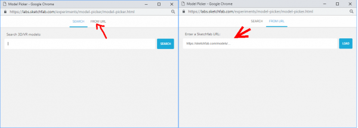
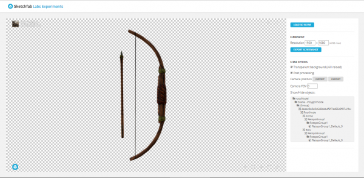
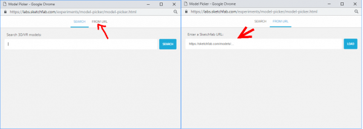
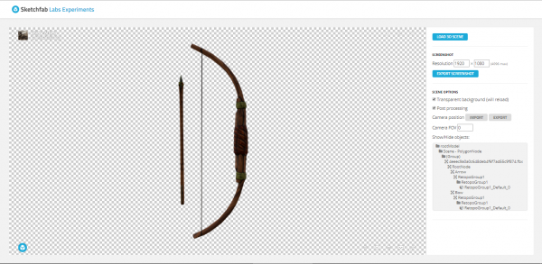

![[ANA JDG] Asterix and the Great Rescue - Megadrive](../vi/6oUXi0ckLmA/default.jpg)
![[ Présentation pour la chaîne Grenier des Joueurs ] JDG Prod](../art/SHAR.6419.583.2.jpg)


Afin de créditer une bonne fois pour toute les personnes à l'origine de mon matériel poopesque (et pour mettre fin à un soucis éthique ), je me permet de citer ici l'ensemble des sources, fan-arts et musiques que j'ai employé dans mes YTPs sur la chaîne "Poopulaire" et "Les petites YTPs de Glin" !
SOURCES
Partie Sources
FAN-ARTS
Partie fan-arts
MUSIQUES
"Owl City - Fireflies rock version" de Futureidiots : https://youtu.be/pCVlfqNTZ3c
"Wii Shop Channel [Eurobeat Remix]" de Dominic Ninmark : https://www.youtube.com/watch?v=gmaIv5JaryU
The Sims 2 - Complete Soundtrack de TantrisOST
" Petit déjeuner " de Mister V Music : https://www.youtube.com/watch?v=W7pj7a5wuMo
" Henri Dès chante - Au marché - chanson pour enfants " de HenriDesTV : https://www.youtube.com/watch?v=3btml3Dm7m0
" Charles Aznavour - Avec un brin de nostalgie (Clip Officiel) " de Charles Aznavour : https://www.youtube.com/watch?v=pCBQzZI4ZKw
" Robert Lopez : Avenue Q "Internet, c'est pour le cul" (Alexis,Demarez/Valière/Glet/Dunoyer de Seg... " de France Musique : https://youtu.be/zvby_pfLugg
" Magic English - Move Body " de Paula Vasconcelos : https://www.youtube.com/watch?v=0nSq1GSDhDg
" Richard Gotainer - Le Mambo du Décalco - ClubMusic80s - clip officiel " de
ClubMusic80s : https://www.youtube.com/watch?v=n7qNILSKTms
"Halogen - U Got That [EPIC METAL COVER] (Little V)" de LittleVMills : https://www.youtube.com/watch?v=j8xoV-v1Yl0
" Rock Mitaine - Petit Escargot [Clip Officiel] " de Rock Mitaine : https://youtu.be/5pls0zyvSZs
" Je bois " de Charles Aznavour : https://www.youtube.com/watch?v=uA2VHxLQbkA
Animal Crossing: New Horizons Soundtrack de Cevan
" Middle earth Shadow of War - The Upper City (OST) " de Some0rdinaryOST : https://www.youtube.com/watch?v=1v7oaqK4nP4
" Je Suis Libertine " de Jean Marc De Vos : https://www.youtube.com/watch?v=UuNQuN4ADUI
" DR. Eggman theme (remix) " de Tr3muzi : https://www.youtube.com/watch?v=ciggrk8fPhY
" Skidrow Portal 2 Launcher Music (with Download) " de raymai97 : https://youtu.be/nnKc08_cnro
" No Nagging Anymore (Karaoke Version) (Originally Performed By Froggy Mix) " de
La-Le-Lu : https://www.youtube.com/watch?v=3SJSmS54Cmk
" Couleurs marrantes (Desnos Catherine) " de Cecilia Somoza : https://www.youtube.com/watch?v=E5M_Xfgx06A
Lemmings (SNES) music de Skaz9000
" Arrête tes conneries (feat. Mike) " de Loostik : https://www.youtube.com/watch?v=x0w0YtCrTuI
WARIO Master Of Disguise - Soundtracks ♫ de ShakeTV - OST Games
Super Metroid OST de SquidGamerGal
" Kass' Theme | Super Smash Bros. Ultimate " de 31 Horas Music de https://www.youtube.com/watch?v=IfA3OpaNgPY
Second Sight — Original Soundtrack de TZMG
" Inkopolis Plaza Splatoon Music Extended " de Mike Speis : https://www.youtube.com/watch?v=AMEfN_4vQKo
Cyprien - Comme une merde (feat. Mister V) : https://www.youtube.com/watch?v=BrGwJC6PiB0
Dead Or Alive - You Spin Me Round : https://www.youtube.com/watch?v=PGNiXGX2nLU
HELLO DARKNESS MY OLD FRIEND LYRICS VERSION 2017: https://www.youtube.com/watch?v=qYS0EeaAUMw
Credits - Hotel Mario Music Extended : https://www.youtube.com/watch?v=npvU1YqwTIo
Professeur Layton theme (Professeur Layton et la boîte de Pandore) https://www.youtube.com/watch?v=DXayww-L7PU
Disturbed - The Sound Of Silence (Vocal Acapella Vocal Track) Old Version: https://www.youtube.com/watch?v=KOFYcN92EM0
Le manège enchanté - Générique: https://www.youtube.com/watch?v=lt8Q-zBa7f4
Battlefield Super Smash Bros. Ultimate: https://www.youtube.com/watch?v=By4KkzQwe-Y
Professor Layton and the Last Specter - Descole's Theme (Live Version): https://www.youtube.com/watch?v=PX7ovPskZIQ
GTA San Andreas Theme Song Full ! !: https://www.youtube.com/watch?v=W4VTq0sa9yg
Saint Seiya Chapter Sanctuary OST BGM 16: https://www.youtube.com/watch?v=1XmNIMz42hI
Les prisons c'est trop bien: https://soundcloud.com/bonheurs-inutiles/les-prisons-cest-trop-bien
Les hommes et les femmes de demain: http://www.bide-et-musique.com/song/13364.html
Qui a du Caca Kaki collé au cucul ♫ ♪ https://www.youtube.com/watch?v=fVqKptcU9mU
Air Tycoon - Minimal: https://www.youtube.com/watch?v=_myH4eDUJRc
Gunther - Ding Dong Song: https://www.youtube.com/watch?v=iPrnduGtgmc
SCH - J'reviens De Loin: https://www.youtube.com/watch?v=MupxpwsUZ1I
DO THE HARLEM SHAKE (ORIGINAL): https://www.youtube.com/watch?v=8vJiSSAMNWw
SOPRANO - HIRO FEAT. INDILA: https://www.youtube.com/watch?v=VLPRQUbhIT0
DBZ Budokai Tenkaichi 1 OST : https://www.youtube.com/playlist?list=PLp_nLDzWK5NWIv6_9AsMiHPMYhGRPXKdJ
"Le travail, c'est la santé" de Frédéric AGNES : https://www.youtube.com/watch?v=MCBXtB8WHng
"[AMVF] JoJo's Bizarre Adventure : Phantom Blood Opening 1 - "Sono Chi no Sadame" SFX (FRENCH COVER)" de AMVF Studio : https://www.youtube.com/watch?v=rJ3u0dZ_als
"Rock Mitaine - Petit Escargot [Clip Officiel]" de Rock Mitaine : https://www.youtube.com/watch?v=5pls0zyvSZs
"Kendji Girac, Soprano - No Me Mirès Màs" de Kendji Girac : https://www.youtube.com/watch?v=kzNJammeCoA&ab_channel=KendjiGiracVEVO
"Kendji Girac - Color Gitano (Official Video)" de Kendji Girac : https://www.youtube.com/watch?v=63K5VMx2BZM&ab_channel=KendjiGiracVEVO
"Caca de ton Tube" de Max le Fou : http://www.maxlefou.com/discographie/cd12/caca-de-ton-tube
"Hymne des Sapeurs Pompiers (Paroles)" de bdnrgs : https://www.youtube.com/watch?v=fbAoS5Y7lSo&ab_channel=bdnrgs
( Cet article sera toujours mis à jour et ne sera jamais assez exhaustif mais il tentera de l'être ! )
KidpaddleetcieGlin
Description :
Le Blog d'une personne aillant découvert internet en 2007 qui partage une partie de sa vie mais surtout ses réflexions, ses découvertes et ses cours!
Bon, je ne vous garantit pas que 100% du contenu est fiable mais aux moins je l'approuve! :)
N'oubliez pas de me retrouver sur les autres sites internet du réseaux KidpaddleetcieGlin retrouvable dans le premier article de chaque page. ^-^
Bon, je ne vous garantit pas que 100% du contenu est fiable mais aux moins je l'approuve! :)
N'oubliez pas de me retrouver sur les autres sites internet du réseaux KidpaddleetcieGlin retrouvable dans le premier article de chaque page. ^-^
Je bosse actuellement pour la chaîne Grenier des Joueurs
Son morceau préféré
Retour au blog de KidpaddleetcieGlin
Afin de créditer une bonne fois pour toute les personnes à l'origine de mon matériel poopesque (et pour mettre fin à un soucis éthique ), je me permet de citer ici l'ensemble des sources, fan-arts et musiques que j'ai employé dans mes YTPs sur la chaîne "Poopulaire" et "Les petites YTPs de Glin" !
SOURCES
" PROFESSEUR LAYTON ET LA DIVA ÉTERNELLE [1080p FR HD] " de Layton's World : https://www.youtube.com/watch?v=zwUzO29aqhY
" Olive et Tom - Le Retour - Episode 1 - Là où tout a commencé " de Olive et Tom | Officiel : https://youtu.be/_GgAnEJZ91g
La chaîne de RosaireTV: https://www.youtube.com/c/RosaireTV/videos
" Mama Luigi Français " de Yoshipuff Félix : https://www.youtube.com/watch?v=W_jGQ5d4W6k
La chaîne de Bonne Nuit Les Petits: https://www.youtube.com/user/bonnenuitlespetitsTV
La chaîne de Bloqués: https://www.youtube.com/c/Bloqu%C3%A9sOfficiel/videos
La chaîne du Joueur du Grenier: https://www.youtube.com/channel/UC_yP2DpIgs5Y1uWC0T03Chw
La chaîne de MadDog: https://www.youtube.com/user/Superbemaddog/videos
" L'Araignée Spiderman Francais 1967 Épisodes 1 " de Ultimate Spiderman Francais : https://www.youtube.com/watch?v=AoHXoxz4yrw
" Les Répliques qui tuent : Super Friends 2 " de Les Répliques qui Tuent : https://www.youtube.com/watch?v=TX0uyyDi0_c
" Hotel Mario Français " de InspecteurWeegee : https://www.youtube.com/watch?v=ULTfihwy_Xo
" Renaud - Toujours debout (Clip officiel) " de Renaud : https://www.youtube.com/watch?v=uv37yxc51bE
"POMPOTOUTAI - Chanson Pokémon - Parodie Stromae "Papaoutai"" de Newtiteuf : https://www.youtube.com/watch?v=hLMsQW_yfwg
La chaîne de Cyprien: https://www.youtube.com/user/MonsieurDream/videos
" Kendji Girac - Andalouse (Clip Officiel) " de Kendji Girac : https://youtu.be/FndmvPkI1Ms
" Lutin Plop - La danse des lutins " de Lutin Plop : https://www.youtube.com/watch?v=FXIQMCVJuME
" NORMAN - ASSASSIN DES TEMPLIERS (ft Squeezie) 4K " de NORMAN FAIT DES VIDÉOS : https://www.youtube.com/watch?v=4qGAjgUZwsk
" Bob Lennon , The Fantasio et l'équipe du joueur du Grenier dans la série Noob ! " de Lucas Baran : https://www.youtube.com/watch?v=j0nzqmIbqSY
" Maître Gims - Est-ce que tu m'aimes ? (Clip officiel) " de GIMS : https://www.youtube.com/watch?v=6TpyRE_juyA
La chaîne de Kiguri _ : https://www.youtube.com/channel/UC9jUpcsC-02zv2OpDaw_0mA/videos
La chaîne de Savun: https://www.youtube.com/channel/UCmCLlnZfSe93AoSGc03l7eA/videos
" Olivier Miller - Génération Virtuelle (Clip Officiel) " de Bigbroz Recordz : https://www.youtube.com/watch?v=_hcujbKVtRs
" Louane - Avenir (clip officiel) " de Louane : https://www.youtube.com/watch?v=niyGWxVE-e4
" Kenza Farah - Problèmes (Clip officiel) ft. Jul " de kenzafarahVEVO : https://www.youtube.com/watch?v=lt_ylc1QNoo
La chaîne francophone de Peppa Pig: https://www.youtube.com/channel/UCXptamDYEVcU4JCio30hYTw/videos
"Le premier savant du Congo, Eddy-Malou Congo-lexicalisation" de Culture of laughter : https://www.youtube.com/watch?v=BCtGhKW9JoI
" ILONA - Un monde parfait " de Ilona Officiel : https://www.youtube.com/watch?v=y8p0BxMykqg
" Générique Les trois petites soeurs " de GeneriKs 90' : https://www.youtube.com/watch?v=jivFHQop7nk
" Nintendo : Dr. Mario – Pub Québec [1991] " de Laurent LaSalle : https://www.youtube.com/watch?v=2Y9oTJHBYmc
" Publicité Docteur mario " de oldschoolgaming : https://www.youtube.com/watch?v=k35GXLJZH3o
La chaîne de Samson Cordier : https://www.youtube.com/user/ThomasKHII/videos
La chaîne de Jacky l'espoir : https://www.youtube.com/c/JackyVSLemonde/videos
Brice: https://www.youtube.com/watch?v=Nlde2bPQYHU
La Youtube Poop - Arte Tracks: https://www.youtube.com/watch?v=V-AZfCFujmc
Zelda: Wand of Gamelon (French) - Intro (Rippé par Kurisu): https://www.youtube.com/watch?v=_NFJyWqgu3Q
Les Inconnus - Jésus II le retour: https://www.youtube.com/watch?v=-xSORIDw1Sg
[ORIGINAL]Pub Carglass: https://www.youtube.com/watch?v=EXo27xLD0kk
10MINUTESAPERDRE - L'appli qui tue: https://www.youtube.com/watch?v=Nc3e9jjuW-E
Netflix Opening (1080p): https://www.youtube.com/watch?v=yYzaEnt0kxs
Haiti News - Crazy Weather Man Laugh: https://www.youtube.com/watch?v=940rzFtFNbs
Mélenchon répond (vite fait) à Hollande !: https://www.youtube.com/watch?v=WXwd0sAi-Wk
M6 Boutique : La Boule Magique. : https://www.youtube.com/watch?v=q2j1MAT80f8
Explosion d'une bombe nucleaire: https://www.youtube.com/watch?v=vxgJCqD0pQ8
Conférence Antoine Daniel (What The Cut): https://www.youtube.com/watch?v=E55tAvF7Qmc
The Rap Battle (PARODY) (ORIGINAL) OHHH!: https://www.youtube.com/watch?v=Iu90z9Akxgk
Alain Finkielkraut à Abdel Raouf Dafri : "Taisez-vous!" - Ce soir (ou jamais !): https://www.youtube.com/watch?v=hDvfg63Auv4
Hotel Mario - Non HD: https://www.youtube.com/watch?v=caXgpo5Ezo4
j'accepte - netecoute.fr - le film interactif: Provenant des archives de Glin car les gens de chez Netecoute.fr n'ont pas compris que YouTube a supprimer les annotations (et leur chaîne aussi... mince)
LA FIN DE MON FOND VERT... : https://www.youtube.com/watch?v=KpO0YgXBMVU
Ta gueule! Tu es moche! : https://www.youtube.com/watch?v=Bo0cpgAtzig
Laurent Wauquiez invité de Jean-Jacques Bourdin: https://www.youtube.com/watch?v=lOonBtufy2Q
Le 29 avec Antoine Daniel #4 - Tu suces ma bite ?: https://www.youtube.com/watch?v=JjzVyyC70Dc
MISTER V - DORMIR: https://www.youtube.com/watch?v=a3bCKxftUTc
Pub Drogba Kinder (2007): https://www.youtube.com/watch?v=qDwRCkILZxU
T'es qu'un p'tit pd, n'oublie pas !: https://www.youtube.com/watch?v=EcuKjDEoECA
Jean-Luc Mélenchon en 12 questions : https://www.youtube.com/watch?v=l0umrvcYy60
Salut, je m'appelle Ahmed (Originale): https://www.youtube.com/watch?v=q_Rz_lxTxxo
Moi... En connerie- Roulroul original: https://www.youtube.com/watch?v=uZEcp808OOE
Denis Brogniart - "Ah !": https://www.youtube.com/watch?v=s5-nUCSXKac
Journal tous sur les jeux: Impossible à retrouver, tout les gens qui la reposte se font strike ! Elle provient donc encore une fois des archives de Glin !
Super Mario World - La partie de football: https://www.youtube.com/watch?v=JpB3dNZLzvg
Joueur du grenier répond à toutes vos questions !: https://www.youtube.com/watch?v=qrZTarWEu-w
La chanson de PacMan 1985: https://www.youtube.com/watch?v=MkXOWwGVX54
Kirby générique (French opening): https://www.youtube.com/watch?v=aQaKHx6P8qw
Truand 2 la Galère Morsay Message à 'Internet': https://www.youtube.com/watch?v=oGWblVTGOP8
[Hitman le Cobra] Philippe! Je sais où tu te caches!: https://www.youtube.com/watch?v=EOxUWLl2HFs
3615 Usul archive: Salauds!: https://www.youtube.com/watch?v=Ozs50kSUr30
Link: Faces of Evil intro French HD; https://www.youtube.com/watch?v=glovD37s6OQ
PSY - GANGNAM STYLE(강남스타일) M/V: https://www.youtube.com/watch?v=9bZkp7q19f0
Best of Hooper (Karkaradon) n°4: https://www.youtube.com/watch?v=UtNj0XmueAg
[French YTP]Nous sommes tous pooper [4]: https://www.dailymotion.com/video/x2jij6u
Joueur du Grenier - Hors série - Les super-héros: https://www.youtube.com/watch?v=ZXYo5ojdt_k
Tintin Le lotus bleu: https://www.youtube.com/watch?v=7z7mefP-SuY
Kaamelott saison 1 - C'est pas faux: https://www.youtube.com/watch?v=TYB2Z2xl4G4
NORMAN - DÉPENSER DE L'ARGENT (THUNE, FRIC, MOULA...): https://www.youtube.com/watch?v=idDWuIJ-sHE
Les téléphones - Cyprien: https://www.youtube.com/watch?v=enHfzoyLdxM
Cyprien - Le vol: https://www.youtube.com/watch?v=1idHya-NxkA
Best Cry Ever: https://www.youtube.com/watch?v=ee925OTFBCA
Hotel Mario (Français) - All Cutscenes (except Hotel 5 Scene) with RAW Audio (Volume FIX): https://www.youtube.com/watch?v=HuO0oQGCOOI
Au revoir: https://www.youtube.com/watch?v=0obJfkU9xB4
Putain 11 ans: https://www.dailymotion.com/video/x697ctw
OUAIS MAIS C'EST PAS TOI QUI DÉCIDE: https://www.youtube.com/watch?v=0VOClq2B0gA
Comment sécuriser et baliser après un accident: https://www.youtube.com/watch?v=AjQYkkCf8V4
Professeur Layton et la boîte de Pandore (cinématiques françaises) : https://www.youtube.com/watch?v=SKJTiLg2jQk
Que faire en cas de brûlure premiers secours: https://www.youtube.com/watch?v=cZcaE4F7YCg
OH PUTEUH J'AI DIT PUTEUH: https://www.youtube.com/watch?v=GkdenQ7rc_M
Cinématique de fin du mode Grand Pope Saint Seiya ps2: https://www.youtube.com/watch?v=TOMNXGxVrcs
Professeur Layton et le masque des miracles - Scène finale: https://www.youtube.com/watch?v=Q8U-eQkBasQ
Salut, je m'appelle Ahmed (Originale): https://www.youtube.com/watch?v=q_Rz_lxTxxo
3 explosions en fond vert : https://www.youtube.com/watch?v=OwfVXJPwGmc
[SFM] Mario's NightMare: https://www.youtube.com/watch?v=PyKBLQgXM_k
Les Inconnus - Biouman: https://www.youtube.com/watch?v=-WoQsLZmynY
AMIXEM GREENSCREEN PACK -- au format MP4// HD : https://www.youtube.com/watch?v=rdQPzwAsKkI
Playthrough - Super Mario Advance 2: SMW (Color Restoration) - World 3 Part 4 (Part 9): https://www.youtube.com/watch?v=9nx6DvrlVaQ
Super Maman Luigi - animation (VF) : https://www.youtube.com/watch?v=rE7zwg-9wFI
POKÉMON S1x01 Le départ : https://www.youtube.com/watch?v=bhZ2CjPM0RY
FAN-ARTS
Partie fan-arts
MUSIQUES
Partie musiques
( Cet article sera toujours mis à jour et ne sera jamais assez exhaustif mais il tentera de l'être ! )
[c=rgba(0,0,0,0.87)]
SOURCES
" PROFESSEUR LAYTON ET LA DIVA ÉTERNELLE [1080p FR HD] " de Layton's World : https://www.youtube.com/watch?v=zwUzO29aqhY
" Olive et Tom - Le Retour - Episode 1 - Là où tout a commencé " de Olive et Tom | Officiel : https://youtu.be/_GgAnEJZ91g
La chaîne de RosaireTV: https://www.youtube.com/c/RosaireTV/videos
" Mama Luigi Français " de Yoshipuff Félix : https://www.youtube.com/watch?v=W_jGQ5d4W6k
La chaîne de Bonne Nuit Les Petits: https://www.youtube.com/user/bonnenuitlespetitsTV
La chaîne de Bloqués: https://www.youtube.com/c/Bloqu%C3%A9sOfficiel/videos
La chaîne du Joueur du Grenier: https://www.youtube.com/channel/UC_yP2DpIgs5Y1uWC0T03Chw
La chaîne de MadDog: https://www.youtube.com/user/Superbemaddog/videos
" L'Araignée Spiderman Francais 1967 Épisodes 1 " de Ultimate Spiderman Francais : https://www.youtube.com/watch?v=AoHXoxz4yrw
" Les Répliques qui tuent : Super Friends 2 " de Les Répliques qui Tuent : https://www.youtube.com/watch?v=TX0uyyDi0_c
" Hotel Mario Français " de InspecteurWeegee : https://www.youtube.com/watch?v=ULTfihwy_Xo
" Renaud - Toujours debout (Clip officiel) " de Renaud : https://www.youtube.com/watch?v=uv37yxc51bE
"POMPOTOUTAI - Chanson Pokémon - Parodie Stromae "Papaoutai"" de Newtiteuf : https://www.youtube.com/watch?v=hLMsQW_yfwg
La chaîne de Cyprien: https://www.youtube.com/user/MonsieurDream/videos
" Kendji Girac - Andalouse (Clip Officiel) " de Kendji Girac : https://youtu.be/FndmvPkI1Ms
" Lutin Plop - La danse des lutins " de Lutin Plop : https://www.youtube.com/watch?v=FXIQMCVJuME
" NORMAN - ASSASSIN DES TEMPLIERS (ft Squeezie) 4K " de NORMAN FAIT DES VIDÉOS : https://www.youtube.com/watch?v=4qGAjgUZwsk
" Bob Lennon , The Fantasio et l'équipe du joueur du Grenier dans la série Noob ! " de Lucas Baran : https://www.youtube.com/watch?v=j0nzqmIbqSY
" Maître Gims - Est-ce que tu m'aimes ? (Clip officiel) " de GIMS : https://www.youtube.com/watch?v=6TpyRE_juyA
La chaîne de Kiguri _ : https://www.youtube.com/channel/UC9jUpcsC-02zv2OpDaw_0mA/videos
La chaîne de Savun: https://www.youtube.com/channel/UCmCLlnZfSe93AoSGc03l7eA/videos
" Olivier Miller - Génération Virtuelle (Clip Officiel) " de Bigbroz Recordz : https://www.youtube.com/watch?v=_hcujbKVtRs
" Louane - Avenir (clip officiel) " de Louane : https://www.youtube.com/watch?v=niyGWxVE-e4
" Kenza Farah - Problèmes (Clip officiel) ft. Jul " de kenzafarahVEVO : https://www.youtube.com/watch?v=lt_ylc1QNoo
La chaîne francophone de Peppa Pig: https://www.youtube.com/channel/UCXptamDYEVcU4JCio30hYTw/videos
"Le premier savant du Congo, Eddy-Malou Congo-lexicalisation" de Culture of laughter : https://www.youtube.com/watch?v=BCtGhKW9JoI
" ILONA - Un monde parfait " de Ilona Officiel : https://www.youtube.com/watch?v=y8p0BxMykqg
" Générique Les trois petites soeurs " de GeneriKs 90' : https://www.youtube.com/watch?v=jivFHQop7nk
" Nintendo : Dr. Mario – Pub Québec [1991] " de Laurent LaSalle : https://www.youtube.com/watch?v=2Y9oTJHBYmc
" Publicité Docteur mario " de oldschoolgaming : https://www.youtube.com/watch?v=k35GXLJZH3o
La chaîne de Samson Cordier : https://www.youtube.com/user/ThomasKHII/videos
La chaîne de Jacky l'espoir : https://www.youtube.com/c/JackyVSLemonde/videos
Brice: https://www.youtube.com/watch?v=Nlde2bPQYHU
La Youtube Poop - Arte Tracks: https://www.youtube.com/watch?v=V-AZfCFujmc
Zelda: Wand of Gamelon (French) - Intro (Rippé par Kurisu): https://www.youtube.com/watch?v=_NFJyWqgu3Q
Les Inconnus - Jésus II le retour: https://www.youtube.com/watch?v=-xSORIDw1Sg
[ORIGINAL]Pub Carglass: https://www.youtube.com/watch?v=EXo27xLD0kk
10MINUTESAPERDRE - L'appli qui tue: https://www.youtube.com/watch?v=Nc3e9jjuW-E
Netflix Opening (1080p): https://www.youtube.com/watch?v=yYzaEnt0kxs
Haiti News - Crazy Weather Man Laugh: https://www.youtube.com/watch?v=940rzFtFNbs
Mélenchon répond (vite fait) à Hollande !: https://www.youtube.com/watch?v=WXwd0sAi-Wk
M6 Boutique : La Boule Magique. : https://www.youtube.com/watch?v=q2j1MAT80f8
Explosion d'une bombe nucleaire: https://www.youtube.com/watch?v=vxgJCqD0pQ8
Conférence Antoine Daniel (What The Cut): https://www.youtube.com/watch?v=E55tAvF7Qmc
The Rap Battle (PARODY) (ORIGINAL) OHHH!: https://www.youtube.com/watch?v=Iu90z9Akxgk
Alain Finkielkraut à Abdel Raouf Dafri : "Taisez-vous!" - Ce soir (ou jamais !): https://www.youtube.com/watch?v=hDvfg63Auv4
Hotel Mario - Non HD: https://www.youtube.com/watch?v=caXgpo5Ezo4
j'accepte - netecoute.fr - le film interactif: Provenant des archives de Glin car les gens de chez Netecoute.fr n'ont pas compris que YouTube a supprimer les annotations (et leur chaîne aussi... mince)
LA FIN DE MON FOND VERT... : https://www.youtube.com/watch?v=KpO0YgXBMVU
Ta gueule! Tu es moche! : https://www.youtube.com/watch?v=Bo0cpgAtzig
Laurent Wauquiez invité de Jean-Jacques Bourdin: https://www.youtube.com/watch?v=lOonBtufy2Q
Le 29 avec Antoine Daniel #4 - Tu suces ma bite ?: https://www.youtube.com/watch?v=JjzVyyC70Dc
MISTER V - DORMIR: https://www.youtube.com/watch?v=a3bCKxftUTc
Pub Drogba Kinder (2007): https://www.youtube.com/watch?v=qDwRCkILZxU
T'es qu'un p'tit pd, n'oublie pas !: https://www.youtube.com/watch?v=EcuKjDEoECA
Jean-Luc Mélenchon en 12 questions : https://www.youtube.com/watch?v=l0umrvcYy60
Salut, je m'appelle Ahmed (Originale): https://www.youtube.com/watch?v=q_Rz_lxTxxo
Moi... En connerie- Roulroul original: https://www.youtube.com/watch?v=uZEcp808OOE
Denis Brogniart - "Ah !": https://www.youtube.com/watch?v=s5-nUCSXKac
Journal tous sur les jeux: Impossible à retrouver, tout les gens qui la reposte se font strike ! Elle provient donc encore une fois des archives de Glin !
Super Mario World - La partie de football: https://www.youtube.com/watch?v=JpB3dNZLzvg
Joueur du grenier répond à toutes vos questions !: https://www.youtube.com/watch?v=qrZTarWEu-w
La chanson de PacMan 1985: https://www.youtube.com/watch?v=MkXOWwGVX54
Kirby générique (French opening): https://www.youtube.com/watch?v=aQaKHx6P8qw
Truand 2 la Galère Morsay Message à 'Internet': https://www.youtube.com/watch?v=oGWblVTGOP8
[Hitman le Cobra] Philippe! Je sais où tu te caches!: https://www.youtube.com/watch?v=EOxUWLl2HFs
3615 Usul archive: Salauds!: https://www.youtube.com/watch?v=Ozs50kSUr30
Link: Faces of Evil intro French HD; https://www.youtube.com/watch?v=glovD37s6OQ
PSY - GANGNAM STYLE(강남스타일) M/V: https://www.youtube.com/watch?v=9bZkp7q19f0
Best of Hooper (Karkaradon) n°4: https://www.youtube.com/watch?v=UtNj0XmueAg
[French YTP]Nous sommes tous pooper [4]: https://www.dailymotion.com/video/x2jij6u
Joueur du Grenier - Hors série - Les super-héros: https://www.youtube.com/watch?v=ZXYo5ojdt_k
Tintin Le lotus bleu: https://www.youtube.com/watch?v=7z7mefP-SuY
Kaamelott saison 1 - C'est pas faux: https://www.youtube.com/watch?v=TYB2Z2xl4G4
NORMAN - DÉPENSER DE L'ARGENT (THUNE, FRIC, MOULA...): https://www.youtube.com/watch?v=idDWuIJ-sHE
Les téléphones - Cyprien: https://www.youtube.com/watch?v=enHfzoyLdxM
Cyprien - Le vol: https://www.youtube.com/watch?v=1idHya-NxkA
Best Cry Ever: https://www.youtube.com/watch?v=ee925OTFBCA
Hotel Mario (Français) - All Cutscenes (except Hotel 5 Scene) with RAW Audio (Volume FIX): https://www.youtube.com/watch?v=HuO0oQGCOOI
Au revoir: https://www.youtube.com/watch?v=0obJfkU9xB4
Putain 11 ans: https://www.dailymotion.com/video/x697ctw
OUAIS MAIS C'EST PAS TOI QUI DÉCIDE: https://www.youtube.com/watch?v=0VOClq2B0gA
Comment sécuriser et baliser après un accident: https://www.youtube.com/watch?v=AjQYkkCf8V4
Professeur Layton et la boîte de Pandore (cinématiques françaises) : https://www.youtube.com/watch?v=SKJTiLg2jQk
Que faire en cas de brûlure premiers secours: https://www.youtube.com/watch?v=cZcaE4F7YCg
OH PUTEUH J'AI DIT PUTEUH: https://www.youtube.com/watch?v=GkdenQ7rc_M
Cinématique de fin du mode Grand Pope Saint Seiya ps2: https://www.youtube.com/watch?v=TOMNXGxVrcs
Professeur Layton et le masque des miracles - Scène finale: https://www.youtube.com/watch?v=Q8U-eQkBasQ
Salut, je m'appelle Ahmed (Originale): https://www.youtube.com/watch?v=q_Rz_lxTxxo
3 explosions en fond vert : https://www.youtube.com/watch?v=OwfVXJPwGmc
[SFM] Mario's NightMare: https://www.youtube.com/watch?v=PyKBLQgXM_k
Les Inconnus - Biouman: https://www.youtube.com/watch?v=-WoQsLZmynY
AMIXEM GREENSCREEN PACK -- au format MP4// HD : https://www.youtube.com/watch?v=rdQPzwAsKkI
Playthrough - Super Mario Advance 2: SMW (Color Restoration) - World 3 Part 4 (Part 9): https://www.youtube.com/watch?v=9nx6DvrlVaQ
Super Maman Luigi - animation (VF) : https://www.youtube.com/watch?v=rE7zwg-9wFI
POKÉMON S1x01 Le départ : https://www.youtube.com/watch?v=bhZ2CjPM0RY
FAN-ARTS
Partie fan-arts
MUSIQUES
Partie musiques
( Cet article sera toujours mis à jour et ne sera jamais assez exhaustif mais il tentera de l'être ! )
[c=rgba(0,0,0,0.87)]
Afin de créditer une bonne fois pour toute les personnes à l'origine de mon matériel poopesque (et pour mettre fin à un soucis éthique ), je me permet de citer ici l'ensemble des sources, fan-arts et musiques que j'ai employé dans mes YTPs sur la chaîne "Poopulaire" et "Les petites YTPs de Glin" !
SOURCES
Parties Sources
FAN-ARTS
" Luke Triton " de Nyaasu : https://www.deviantart.com/nyaasu/art/Luke-Triton-197678376
" エルシャール・レイトン " (traduction: Hershall Leighton ) de 山寺宏一 (traduction: Koichi Yamadera) : https://natalie.mu/comic/gallery/news/284644/936253
Des emotes Professeur Layton dont la paternité n'est pas reconnue: https://monobrobe.tumblr.com/post/51588951342/i-hope-no-one-else-has-already-uploaded-this-but
"those brothers have very handsome strides" de Sleepyotter : https://otter-quadrent.tumblr.com/post/118849833700/those-brothers-have-very-handsome-strides-i-dont
Pleins de poses de Layton, Emmy et Luke de n0n01o3 : https://n0n01o3.tumblr.com/post/156495106130
" Layton Kyouju to Eien no Utahime - Luke Triton - Plush (Size Small) "de San-ei : https://solarisjapan.com/products/layton-kyouju-to-eien-no-utahime-luke-triton-plush-size-small-san-ei
" Layton Kyouju to Eien no Utahime - Hershel Layton - Plush (Size Small) " de San-ei : https://solarisjapan.com/products/layton-kyouju-to-eien-no-utahime-hershel-layton-plush-size-small-san-ei
" PL vs AA is coming!!! " de zillabean : https://www.deviantart.com/zillabean/art/PL-vs-AA-is-coming-478599805
" Layton - stylized " de vdburg : https://www.deviantart.com/vdburg/art/Layton-stylized-561313925
" Layton Cosplay " de toddleart : https://www.deviantart.com/toddleart/art/Layton-Cosplay-550169933
" Layton " de danfoxx : https://www.deviantart.com/danfoxx/art/Layton-614282452
" Layton X SAW spoof " de meru-chan : https://www.deviantart.com/meru-chan/art/Layton-X-SAW-spoof-175303461
" Layton " de peaceelectronics : https://www.deviantart.com/peaceelectronics/art/Layton-667807314
" layton " de dreamstation369 : https://www.deviantart.com/dreamstation369/art/layton-217389460
" Puzzled Professor " de zillabean : https://www.deviantart.com/zillabean/art/Puzzled-Professor-181508928
" Puzzled Professor " de zillabean : https://www.deviantart.com/zillabean/art/Puzzled-Professor-181508928
" 006. Tower " de luphin : https://www.deviantart.com/luphin/art/006-Tower-263575642
" Men's best friends " de zillabean : https://www.deviantart.com/zillabean/art/Men-s-best-friends-408194467
" LAYTON NONSENSE " de zillabean : https://www.deviantart.com/zillabean/art/LAYTON-NONSENSE-183357142
" A fun crossover adventure " de c-puff : https://www.deviantart.com/c-puff/art/A-fun-crossover-adventure-590954826
" Laytoned.gif " de daycolors : https://www.deviantart.com/daycolors/art/Laytoned-gif-836076343
" Layton " de thedamn-thinguy : https://www.deviantart.com/thedamn-thinguy/art/Layton-394287593
" Layton " de super-cute : https://www.deviantart.com/super-cute/art/Layton-151291882
" Layton " de narista : https://www.deviantart.com/narista/art/Layton-132516919
" Layton Valentines " de drunkpugs : https://www.deviantart.com/drunkpugs/art/Layton-Valentines-432011996
" layton is angryyyyy " de spongebobluvr66 : https://www.deviantart.com/spongebobluvr66/art/layton-is-angryyyyy-216873518
" layton's apprentice " de superpandaman : https://www.deviantart.com/superpandaman/art/layton-s-apprentice-181360250
" Layton Simplified " de larissaxarnhem : https://www.deviantart.com/larissaxarnhem/art/Layton-Simplified-331542958
" Layton and Descole " de descolefan1 : https://www.deviantart.com/descolefan1/art/Layton-and-Descole-361689722
" Professor Layton " de mightymola : https://www.deviantart.com/mightymola/art/Professor-Layton-561874195
" Commission: Descole " de lucariofan1996 : https://www.deviantart.com/lucariofan1996/art/Commission-Descole-492983422
" layton and luke " de kimchi1uva : https://www.deviantart.com/kimchi1uva/art/layton-and-luke-177731133
" Layton " de trophy-sketcher : https://www.deviantart.com/trophy-sketcher/art/Layton-608922172
" Layton 1 " de fox-in-boots : https://www.deviantart.com/fox-in-boots/art/Layton-1-186946248
" It's Casual Friday " de zillabean : https://www.deviantart.com/zillabean/art/It-s-Casual-Friday-415256313
" Professor Layton. " de aqua-aquaria : https://www.deviantart.com/aqua-aquaria/art/Professor-Layton-479126437
" Chibi Layton is Watching " de zillabean : https://www.deviantart.com/zillabean/art/Chibi-Layton-is-Watching-217220463
" ''W-well, that's....'' " de labrelum : https://www.deviantart.com/labrelum/art/W-well-that-s-782772341
" Professor Layton smashified! " de jdmh : https://www.deviantart.com/jdmh/art/Professor-Layton-smashified-675577170
" Object to THIS " de zillabean : https://www.deviantart.com/zillabean/art/Object-to-THIS-340557533
" Prof. Layton " de artist-squared : https://www.deviantart.com/artist-squared/art/Prof-Layton-558125047
" Into the Great Wide Open " de zillabean : https://www.deviantart.com/zillabean/art/Into-the-Great-Wide-Open-287908477
" Professor Layton Smashified (Transparent) " de shinfurevindo : https://www.deviantart.com/shinfurevindo/art/Professor-Layton-Smashified-Transparent-571500460
" layton in minecraft " de maimai030 : https://www.deviantart.com/maimai030/art/layton-in-minecraft-341001946
" Professor Layton Practice " de forevvermore : https://www.deviantart.com/forevvermore/art/Professor-Layton-Practice-504441898
" Layton " de digimonfanatic12 : https://www.deviantart.com/digimonfanatic12/art/Layton-298099379
" Professor Layton " de zimokitoka : https://www.deviantart.com/zimokitoka/art/Professor-Layton-826244251
" Layton Win " de horseman1 : https://www.deviantart.com/horseman1/art/Layton-Win-178266059
" Hershel Layton " de wildragon : https://www.deviantart.com/wildragon/art/Hershel-Layton-483987736
" Layton " de kirbro : https://www.deviantart.com/kirbro/art/Layton-669351313
" Descole And Me " de shmemilyemily : https://www.deviantart.com/shmemilyemily/art/Descole-And-Me-667003014
" Descole " de artist-squared : https://www.deviantart.com/artist-squared/art/Descole-558207388
" Descoles mask " de professoraurabolt : https://www.deviantart.com/professoraurabolt/art/Descoles-mask-353129943
" Descole " de lubly-descole : https://www.deviantart.com/lubly-descole/art/Descole-413993759
" Descole " de kirbro : https://www.deviantart.com/kirbro/art/Descole-632166149
" descole incorrect ANIMATED " de spongebobluvr66 : https://www.deviantart.com/spongebobluvr66/art/descole-incorrect-ANIMATED-263845489
" descoles golden garden " de spongebobluvr66 : https://www.deviantart.com/spongebobluvr66/art/descoles-golden-garden-267641852
" ::descole what are you doing:: " de cockneys : https://www.deviantart.com/cockneys/art/descole-what-are-you-doing-270228397
" descole is a pervet " de thelunnaworld : https://www.deviantart.com/thelunnaworld/art/descole-is-a-pervet-266746844
" Descole's Handwriting " de ultimateshadow111 : https://www.deviantart.com/ultimateshadow111/art/Descole-s-Handwriting-324466284
" descoles cool " de spongebobluvr66 : https://www.deviantart.com/spongebobluvr66/art/descoles-cool-217144049
" Kiriban - Call Me Descole " de samcybercat : https://www.deviantart.com/samcybercat/art/Kiriban-Call-Me-Descole-574742984
" Descole " de suicidal-zombie : https://www.deviantart.com/suicidal-zombie/art/Descole-355187229
" Descole - Old Spice " de kurootsukki : https://www.deviantart.com/kurootsukki/art/Descole-Old-Spice-432456666
" This Reminds Me of a ... " de citrouilleskull : https://www.deviantart.com/citrouilleskull/art/This-Reminds-Me-of-a-492403760
" Descole " de mrsaturn420 : https://www.deviantart.com/mrsaturn420/art/Descole-293293104
" bubbly descole " de spongebobluvr66 : https://www.deviantart.com/spongebobluvr66/art/bubbly-descole-217221309
" ~Request~ By Jove You've Wrecked My Robot " de northely : https://www.deviantart.com/northely/art/Request-By-Jove-You-ve-Wrecked-My-Robot-660725915
" Poor Descole " de dkleviathan : https://www.deviantart.com/dkleviathan/art/Poor-Descole-313464066
" After Drinking - DesLay ~~Cosplay " de the-man-with-the-hat : https://www.deviantart.com/the-man-with-the-hat/art/After-Drinking-DesLay-Cosplay-370774775
" thorns " de spongebobluvr66 : https://www.deviantart.com/spongebobluvr66/art/thorns-257440556
" Descoleplushie for Janezy " de masterplanner : https://www.deviantart.com/masterplanner/art/Descoleplushie-for-Janezy-204983916
" JEAN DESCOLE " de najikasun : https://www.deviantart.com/najikasun/art/JEAN-DESCOLE-195587196
" PL fruit chibi - Layton " de kurootsukki : https://www.deviantart.com/kurootsukki/art/PL-fruit-chibi-Layton-282970008
" Professor Layton Villains " de kurootsukki : https://www.deviantart.com/kurootsukki/art/Professor-Layton-Villains-491285765
" My Drawing of Descole " de coolsapc : https://www.deviantart.com/coolsapc/art/My-Drawing-of-Descole-327906958
" Request - DescolexAnthony " de kurootsukki : https://www.deviantart.com/kurootsukki/art/Request-DescolexAnthony-513987896
" Leave me be " de okamiremedy : https://www.deviantart.com/okamiremedy/art/Leave-me-be-187003274
" that one meme " de hyoutas : https://www.deviantart.com/hyoutas/art/that-one-meme-381360968
" HI MOM " de spongebobluvr66 : https://www.deviantart.com/spongebobluvr66/art/HI-MOM-217221781
" cuz real men have tea parties " de spongebobluvr66 : https://www.deviantart.com/spongebobluvr66/art/cuz-real-men-have-tea-parties-217612609
" descole " de platinumpoinsetta : https://www.deviantart.com/platinumpoinsetta/art/descole-569057658
" dOoDlEs : Jean Descole " de jackspicerchase : https://www.deviantart.com/jackspicerchase/art/dOoDlEs-Jean-Descole-187175940
" Jean Descole Chibi " de amyroseharuka : https://www.deviantart.com/amyroseharuka/art/Jean-Descole-Chibi-598209561
" His Archnemesis? ...You? " de ultimateshadow111 : https://www.deviantart.com/ultimateshadow111/art/His-Archnemesis-You-324096332
" lEmMe Be YeR aPpReNtIcE " de jackspicerchase : https://www.deviantart.com/jackspicerchase/art/lEmMe-Be-YeR-aPpReNtIcE-196155927
" jEaN dEsCoLe DoOdLe " de jackspicerchase : https://www.deviantart.com/jackspicerchase/art/jEaN-dEsCoLe-DoOdLe-185008527
" 016:Descole " de xchrononautx : https://www.deviantart.com/xchrononautx/art/016-Descole-312709506
" CHIBI DESCOLE!!! 3 " de raccoontwin-3 : https://www.deviantart.com/raccoontwin-3/art/CHIBI-DESCOLE-3-529967257
" Jean Descole " de minitantei : https://www.deviantart.com/minitantei/art/Jean-Descole-521781589
L'instagram de desmond_descole_ : https://www.instagram.com/desmond_descole_/
" Look at those legs girl " de Sonikku0691 : https://www.deviantart.com/sonikku0691/art/Look-at-those-legs-girl-369743557
Le Twitter de @asalguez : https://twitter.com/asalguez et surtout son post: https://twitter.com/asalguez/status/1168279902514286592
" The (Real) Eternal Diva " de pinkpaca : https://www.deviantart.com/pinkpaca/art/The-Real-Eternal-Diva-488971198
" Deam Team commission " de michaeljlarson : https://www.deviantart.com/michaeljlarson/art/Deam-Team-commission-434800956
Le Professeur Layton pelucheux de
Dani Saornil : https://www.artstation.com/artwork/kDKoPd
Tintin réaliste mais en 3D de Debjit Das : https://www.artstation.com/artwork/oAGOlm
Tintin en Ink'n'Paint de Javi Osés : https://www.artstation.com/artwork/v1lBEd
Tintin avec pistolet de HORBart : https://www.artstation.com/artwork/R36XvX
Le Capitaine Haddock qui regarde derrière à couvert a été fait par Fernando Abrantes : https://www.artstation.com/artwork/w81VgY
" 路易吉 " ("Luigi") de 林小魚 ("Lin Xiaoyu") : https://youtu.be/-cBjZeO4M-w
" Luigi bad day " de esteban franco : https://vimeo.com/299727319
Le Descole Chibi et de face de Loss.jpeg / sunnyskies281 : https://www.tumgir.com/tag/desmitri%20fam
"レイトン教授VS逆転裁判を互いに歩み寄らせてみた" de 山口カエ : http://pixiv.navirank.com/id/14428605/
UNE ÉNORME GALLERIE DE FAN-ART DE PROFESSEUR LAYTON EN JAPONAIS : http://hereyes.web.fc2.com/20-log3.html
Les fan-arts de Docteur Mario et Mario de Syaon_TSHSCL : https://twitter.com/Syaon_TSHSCL
N'oublions pas le Pinterest: https://www.pinterest.fr/Kidpaddleetcie/
MUSIQUES
Partie musiques
( Cet article sera toujours mis à jour et ne sera jamais assez exhaustif mais il tentera de l'être ! )
https://sunnyskies281.tumblr.com/
SOURCES
Parties Sources
FAN-ARTS
" Luke Triton " de Nyaasu : https://www.deviantart.com/nyaasu/art/Luke-Triton-197678376
" エルシャール・レイトン " (traduction: Hershall Leighton ) de 山寺宏一 (traduction: Koichi Yamadera) : https://natalie.mu/comic/gallery/news/284644/936253
Des emotes Professeur Layton dont la paternité n'est pas reconnue: https://monobrobe.tumblr.com/post/51588951342/i-hope-no-one-else-has-already-uploaded-this-but
"those brothers have very handsome strides" de Sleepyotter : https://otter-quadrent.tumblr.com/post/118849833700/those-brothers-have-very-handsome-strides-i-dont
Pleins de poses de Layton, Emmy et Luke de n0n01o3 : https://n0n01o3.tumblr.com/post/156495106130
" Layton Kyouju to Eien no Utahime - Luke Triton - Plush (Size Small) "de San-ei : https://solarisjapan.com/products/layton-kyouju-to-eien-no-utahime-luke-triton-plush-size-small-san-ei
" Layton Kyouju to Eien no Utahime - Hershel Layton - Plush (Size Small) " de San-ei : https://solarisjapan.com/products/layton-kyouju-to-eien-no-utahime-hershel-layton-plush-size-small-san-ei
" PL vs AA is coming!!! " de zillabean : https://www.deviantart.com/zillabean/art/PL-vs-AA-is-coming-478599805
" Layton - stylized " de vdburg : https://www.deviantart.com/vdburg/art/Layton-stylized-561313925
" Layton Cosplay " de toddleart : https://www.deviantart.com/toddleart/art/Layton-Cosplay-550169933
" Layton " de danfoxx : https://www.deviantart.com/danfoxx/art/Layton-614282452
" Layton X SAW spoof " de meru-chan : https://www.deviantart.com/meru-chan/art/Layton-X-SAW-spoof-175303461
" Layton " de peaceelectronics : https://www.deviantart.com/peaceelectronics/art/Layton-667807314
" layton " de dreamstation369 : https://www.deviantart.com/dreamstation369/art/layton-217389460
" Puzzled Professor " de zillabean : https://www.deviantart.com/zillabean/art/Puzzled-Professor-181508928
" Puzzled Professor " de zillabean : https://www.deviantart.com/zillabean/art/Puzzled-Professor-181508928
" 006. Tower " de luphin : https://www.deviantart.com/luphin/art/006-Tower-263575642
" Men's best friends " de zillabean : https://www.deviantart.com/zillabean/art/Men-s-best-friends-408194467
" LAYTON NONSENSE " de zillabean : https://www.deviantart.com/zillabean/art/LAYTON-NONSENSE-183357142
" A fun crossover adventure " de c-puff : https://www.deviantart.com/c-puff/art/A-fun-crossover-adventure-590954826
" Laytoned.gif " de daycolors : https://www.deviantart.com/daycolors/art/Laytoned-gif-836076343
" Layton " de thedamn-thinguy : https://www.deviantart.com/thedamn-thinguy/art/Layton-394287593
" Layton " de super-cute : https://www.deviantart.com/super-cute/art/Layton-151291882
" Layton " de narista : https://www.deviantart.com/narista/art/Layton-132516919
" Layton Valentines " de drunkpugs : https://www.deviantart.com/drunkpugs/art/Layton-Valentines-432011996
" layton is angryyyyy " de spongebobluvr66 : https://www.deviantart.com/spongebobluvr66/art/layton-is-angryyyyy-216873518
" layton's apprentice " de superpandaman : https://www.deviantart.com/superpandaman/art/layton-s-apprentice-181360250
" Layton Simplified " de larissaxarnhem : https://www.deviantart.com/larissaxarnhem/art/Layton-Simplified-331542958
" Layton and Descole " de descolefan1 : https://www.deviantart.com/descolefan1/art/Layton-and-Descole-361689722
" Professor Layton " de mightymola : https://www.deviantart.com/mightymola/art/Professor-Layton-561874195
" Commission: Descole " de lucariofan1996 : https://www.deviantart.com/lucariofan1996/art/Commission-Descole-492983422
" layton and luke " de kimchi1uva : https://www.deviantart.com/kimchi1uva/art/layton-and-luke-177731133
" Layton " de trophy-sketcher : https://www.deviantart.com/trophy-sketcher/art/Layton-608922172
" Layton 1 " de fox-in-boots : https://www.deviantart.com/fox-in-boots/art/Layton-1-186946248
" It's Casual Friday " de zillabean : https://www.deviantart.com/zillabean/art/It-s-Casual-Friday-415256313
" Professor Layton. " de aqua-aquaria : https://www.deviantart.com/aqua-aquaria/art/Professor-Layton-479126437
" Chibi Layton is Watching " de zillabean : https://www.deviantart.com/zillabean/art/Chibi-Layton-is-Watching-217220463
" ''W-well, that's....'' " de labrelum : https://www.deviantart.com/labrelum/art/W-well-that-s-782772341
" Professor Layton smashified! " de jdmh : https://www.deviantart.com/jdmh/art/Professor-Layton-smashified-675577170
" Object to THIS " de zillabean : https://www.deviantart.com/zillabean/art/Object-to-THIS-340557533
" Prof. Layton " de artist-squared : https://www.deviantart.com/artist-squared/art/Prof-Layton-558125047
" Into the Great Wide Open " de zillabean : https://www.deviantart.com/zillabean/art/Into-the-Great-Wide-Open-287908477
" Professor Layton Smashified (Transparent) " de shinfurevindo : https://www.deviantart.com/shinfurevindo/art/Professor-Layton-Smashified-Transparent-571500460
" layton in minecraft " de maimai030 : https://www.deviantart.com/maimai030/art/layton-in-minecraft-341001946
" Professor Layton Practice " de forevvermore : https://www.deviantart.com/forevvermore/art/Professor-Layton-Practice-504441898
" Layton " de digimonfanatic12 : https://www.deviantart.com/digimonfanatic12/art/Layton-298099379
" Professor Layton " de zimokitoka : https://www.deviantart.com/zimokitoka/art/Professor-Layton-826244251
" Layton Win " de horseman1 : https://www.deviantart.com/horseman1/art/Layton-Win-178266059
" Hershel Layton " de wildragon : https://www.deviantart.com/wildragon/art/Hershel-Layton-483987736
" Layton " de kirbro : https://www.deviantart.com/kirbro/art/Layton-669351313
" Descole And Me " de shmemilyemily : https://www.deviantart.com/shmemilyemily/art/Descole-And-Me-667003014
" Descole " de artist-squared : https://www.deviantart.com/artist-squared/art/Descole-558207388
" Descoles mask " de professoraurabolt : https://www.deviantart.com/professoraurabolt/art/Descoles-mask-353129943
" Descole " de lubly-descole : https://www.deviantart.com/lubly-descole/art/Descole-413993759
" Descole " de kirbro : https://www.deviantart.com/kirbro/art/Descole-632166149
" descole incorrect ANIMATED " de spongebobluvr66 : https://www.deviantart.com/spongebobluvr66/art/descole-incorrect-ANIMATED-263845489
" descoles golden garden " de spongebobluvr66 : https://www.deviantart.com/spongebobluvr66/art/descoles-golden-garden-267641852
" ::descole what are you doing:: " de cockneys : https://www.deviantart.com/cockneys/art/descole-what-are-you-doing-270228397
" descole is a pervet " de thelunnaworld : https://www.deviantart.com/thelunnaworld/art/descole-is-a-pervet-266746844
" Descole's Handwriting " de ultimateshadow111 : https://www.deviantart.com/ultimateshadow111/art/Descole-s-Handwriting-324466284
" descoles cool " de spongebobluvr66 : https://www.deviantart.com/spongebobluvr66/art/descoles-cool-217144049
" Kiriban - Call Me Descole " de samcybercat : https://www.deviantart.com/samcybercat/art/Kiriban-Call-Me-Descole-574742984
" Descole " de suicidal-zombie : https://www.deviantart.com/suicidal-zombie/art/Descole-355187229
" Descole - Old Spice " de kurootsukki : https://www.deviantart.com/kurootsukki/art/Descole-Old-Spice-432456666
" This Reminds Me of a ... " de citrouilleskull : https://www.deviantart.com/citrouilleskull/art/This-Reminds-Me-of-a-492403760
" Descole " de mrsaturn420 : https://www.deviantart.com/mrsaturn420/art/Descole-293293104
" bubbly descole " de spongebobluvr66 : https://www.deviantart.com/spongebobluvr66/art/bubbly-descole-217221309
" ~Request~ By Jove You've Wrecked My Robot " de northely : https://www.deviantart.com/northely/art/Request-By-Jove-You-ve-Wrecked-My-Robot-660725915
" Poor Descole " de dkleviathan : https://www.deviantart.com/dkleviathan/art/Poor-Descole-313464066
" After Drinking - DesLay ~~Cosplay " de the-man-with-the-hat : https://www.deviantart.com/the-man-with-the-hat/art/After-Drinking-DesLay-Cosplay-370774775
" thorns " de spongebobluvr66 : https://www.deviantart.com/spongebobluvr66/art/thorns-257440556
" Descoleplushie for Janezy " de masterplanner : https://www.deviantart.com/masterplanner/art/Descoleplushie-for-Janezy-204983916
" JEAN DESCOLE " de najikasun : https://www.deviantart.com/najikasun/art/JEAN-DESCOLE-195587196
" PL fruit chibi - Layton " de kurootsukki : https://www.deviantart.com/kurootsukki/art/PL-fruit-chibi-Layton-282970008
" Professor Layton Villains " de kurootsukki : https://www.deviantart.com/kurootsukki/art/Professor-Layton-Villains-491285765
" My Drawing of Descole " de coolsapc : https://www.deviantart.com/coolsapc/art/My-Drawing-of-Descole-327906958
" Request - DescolexAnthony " de kurootsukki : https://www.deviantart.com/kurootsukki/art/Request-DescolexAnthony-513987896
" Leave me be " de okamiremedy : https://www.deviantart.com/okamiremedy/art/Leave-me-be-187003274
" that one meme " de hyoutas : https://www.deviantart.com/hyoutas/art/that-one-meme-381360968
" HI MOM " de spongebobluvr66 : https://www.deviantart.com/spongebobluvr66/art/HI-MOM-217221781
" cuz real men have tea parties " de spongebobluvr66 : https://www.deviantart.com/spongebobluvr66/art/cuz-real-men-have-tea-parties-217612609
" descole " de platinumpoinsetta : https://www.deviantart.com/platinumpoinsetta/art/descole-569057658
" dOoDlEs : Jean Descole " de jackspicerchase : https://www.deviantart.com/jackspicerchase/art/dOoDlEs-Jean-Descole-187175940
" Jean Descole Chibi " de amyroseharuka : https://www.deviantart.com/amyroseharuka/art/Jean-Descole-Chibi-598209561
" His Archnemesis? ...You? " de ultimateshadow111 : https://www.deviantart.com/ultimateshadow111/art/His-Archnemesis-You-324096332
" lEmMe Be YeR aPpReNtIcE " de jackspicerchase : https://www.deviantart.com/jackspicerchase/art/lEmMe-Be-YeR-aPpReNtIcE-196155927
" jEaN dEsCoLe DoOdLe " de jackspicerchase : https://www.deviantart.com/jackspicerchase/art/jEaN-dEsCoLe-DoOdLe-185008527
" 016:Descole " de xchrononautx : https://www.deviantart.com/xchrononautx/art/016-Descole-312709506
" CHIBI DESCOLE!!! 3 " de raccoontwin-3 : https://www.deviantart.com/raccoontwin-3/art/CHIBI-DESCOLE-3-529967257
" Jean Descole " de minitantei : https://www.deviantart.com/minitantei/art/Jean-Descole-521781589
L'instagram de desmond_descole_ : https://www.instagram.com/desmond_descole_/
" Look at those legs girl " de Sonikku0691 : https://www.deviantart.com/sonikku0691/art/Look-at-those-legs-girl-369743557
Le Twitter de @asalguez : https://twitter.com/asalguez et surtout son post: https://twitter.com/asalguez/status/1168279902514286592
" The (Real) Eternal Diva " de pinkpaca : https://www.deviantart.com/pinkpaca/art/The-Real-Eternal-Diva-488971198
" Deam Team commission " de michaeljlarson : https://www.deviantart.com/michaeljlarson/art/Deam-Team-commission-434800956
Le Professeur Layton pelucheux de
Dani Saornil : https://www.artstation.com/artwork/kDKoPd
Tintin réaliste mais en 3D de Debjit Das : https://www.artstation.com/artwork/oAGOlm
Tintin en Ink'n'Paint de Javi Osés : https://www.artstation.com/artwork/v1lBEd
Tintin avec pistolet de HORBart : https://www.artstation.com/artwork/R36XvX
Le Capitaine Haddock qui regarde derrière à couvert a été fait par Fernando Abrantes : https://www.artstation.com/artwork/w81VgY
" 路易吉 " ("Luigi") de 林小魚 ("Lin Xiaoyu") : https://youtu.be/-cBjZeO4M-w
" Luigi bad day " de esteban franco : https://vimeo.com/299727319
Le Descole Chibi et de face de Loss.jpeg / sunnyskies281 : https://www.tumgir.com/tag/desmitri%20fam
"レイトン教授VS逆転裁判を互いに歩み寄らせてみた" de 山口カエ : http://pixiv.navirank.com/id/14428605/
UNE ÉNORME GALLERIE DE FAN-ART DE PROFESSEUR LAYTON EN JAPONAIS : http://hereyes.web.fc2.com/20-log3.html
Les fan-arts de Docteur Mario et Mario de Syaon_TSHSCL : https://twitter.com/Syaon_TSHSCL
N'oublions pas le Pinterest: https://www.pinterest.fr/Kidpaddleetcie/
MUSIQUES
Partie musiques
( Cet article sera toujours mis à jour et ne sera jamais assez exhaustif mais il tentera de l'être ! )
https://sunnyskies281.tumblr.com/
Lorsqu'on est codeur ou juste en manque de framework adapté à nos besoins, on a besoin de créé un framework pour soi...
Le truc marrant est que j'ai eût la flemme de me creuser la tête pour le créer donc j'ai juste fait des copier-coller de ce que j'avais fais de particulier dans mes feuilles de CSS et SCSS ! Ce qui rends le framework très étrange dans sa conception !
Bien sur, si je vous propose de le prendre à ce lien ( https://raw.githubusercontent.com/Kidpaddleetcie/Glin-Framework/master/Glin/css/Glin.css ) c'est parce que dans toutes ces idées, il y en a probablement que vous apprécierez !
Voici une démo de ce qu'on peut y retrouver: https://kidpaddleetcie.github.io/Glin-Framework/
Voici la page résumant tout ce qu'il y a à trouver et comment les utiliser (il n'y a plus qu'à copier-coller, c'est magnifique ! ): https://github.com/Kidpaddleetcie/Glin-Framework
Bien sur, ce Framework pourrait évolué en fonction de mes envies et des idées qu'on me propose mais sachez que le plus gros y est déjà !
Bonne session de copier-coller !

Lorsque que je me suis permis de créer les bases de mon site web, je me suis coincé par les codes et par la mise en place d'un contenu adaptable sur mobile et PC (et aussi sur TV)!
De ce fait, j'ai pris le partit de commencer avec ce code qui permet de créer des sommaires qui se déploie en passant le curseur dessus :
sfHover = function() {
var sfEls = document.getElementById("menu").getElementsByTagName("LI");
for (var i=0; i<sfEls.length; i++) {
sfEls.onmouseover=function() {
this.className+=" sfhover";
}
sfEls.onmouseout=function() {
this.className=this.className.replace(new RegExp(" sfhover\\b"), "");
}
}
}
if (window.attachEvent) window.attachEvent("onload", sfHover);
Et je vous offre tout le reste du code avec son résultat:
https://codepen.io/kidpaddleetcie/pen/pQNOeB
Pour le CSS, je m'y suis pris comme ça:
html{
margin: 0;
padding: 0;
overflow-x: hidden;
width: 100%;
height:100%
}
body {
background-color: white;
font-family: Verdana, sans-serif;
font-size: 100%;
}
img .base {
height: auto;
min-width :133px;
}
ul {
padding:0;
margin:0;
list-style-type:none;
}
#logo{
margin-left: auto;
margin-right: 370px;
margin-top:-200px;
padding-bottom:0px;
padding-left:0px;
padding-right:0px;
padding-top:0px;
}
/* Pour le "header" qui se retrouve toujours tout en haut de la page */
#menu, #menu ul
/* Liste */
{
padding : 0;
/* pas de marge intérieure */
margin : 0;
/* ni extérieure */
list-style : none;
/* on supprime le style par défaut de la liste */
line-height : 21px;
/* on définit une hauteur pour chaque élément */
text-align : center;
/* on centre le texte qui se trouve dans la liste */
}
#menu
/* Ensemble du menu */
{
font-weight : bold;
/* on met le texte en gras */
font-family : Arial;
/* on utilise Arial, c'est plus beau ^^ */
font-size : 12px;
/* hauteur du texte : 12 pixels */
}
#menu a
/* Contenu des listes */
{
color: black;
text-decoration: none;
background-color:lightblue;
border-color: #696969 #DCDCDC #DCDCDC #696969;
font-size: 95%;
border-radius: 50px;
display : block;
/* on change le type d'élément, les liens deviennent des balises de type block */
padding : 0;
/* aucune marge intérieure */
width : 250px;
/* largeur */
}
#menu li
/* Elements des listes */
{
float : left;
/* pour IE qui ne reconnaît pas "transparent" */
border-right : 1px solid #fff;
/* on met une bordure blanche à droite de chaque élément */
}
/* IE ne reconnaissant pas le sélecteur ">" */
html>body #menu li
{
border-right: 1px solid transparent ;
/* on met une bordure transparente à droite de chaque élément */
}
#menu li ul
/* Sous-listes */
{
position: absolute;
/* Position absolue */
width: 200px;
/* Largeur des sous-listes */
left: -999em;
/* Hop, on envoie loin du champ de vision */
}
#menu li ul li
/* Éléments de sous-listes */
{
/* pour IE qui ne reconnaît pas "transparent" (comme précédemment) */
border-top : 1px solid #fff;
/* on met une bordure blanche en haut de chaque élément d'une sous liste */
}
/* IE ne reconnaissant pas le sélecteur ">" */
html>body #menu li ul li
{
border-top : 1px solid transparent;
/* on met une bordure transparente en haut de chaque élément */
}
#menu li ul ul
{
margin: -22px 0 0 2px ;
/* On décale les sous-sous-listes pour qu'elles ne soient pas au dessus des sous-listes */
/* pour IE qui ne reconnaît pas "transparent" (comme précédemment) */
border-left: 1px solid #fff ;
/* Petite bordure à gauche pour ne pas coller ... */
}
/* IE ne reconnaissant pas le sélecteur ">" ... je me répète ;-) */
html>body #menu li ul ul
{
border-left: 1px solid transparent ;
/* on met une bordure transparente sur la gauche de chaque élément */
}
#menu li:hover ul ul, #menu li.sfhover ul ul
/* Sous-sous-listes lorsque la souris passe sur un élément de liste */
{
left: -999em;
/* On expédie les sous-sous-listes hors du champ de vision */
}
#menu li:hover ul, #menu li li:hover ul, #menu li.sfhover ul, #menu li li.sfhover ul
/* Sous-listes lorsque la souris passe sur un élément de liste ET sous-sous-lites lorsque la souris passe sur un élément de sous-liste */
{
left: auto;
/* Repositionnement normal */
min-height: 0;
/* Corrige un bug sous IE */
}
#box{
background-image:url('Images/box.png');background-repeat:no-repeat;
}
#Lien_Centré
{
display:block;
text-align:center;
}
div #menugauche {
border-top-color:rgb(0, 0, 254);
border-top-style:none;
border-top-width:0px;
clear:left;
color:rgb(0, 0, 254);
display:block;
float:left;
font-family:"Arial Black";
font-size:9px;
margin-bottom:0px;
margin-left:0px;
margin-right:8px;
margin-top:0px;
padding-bottom:0px;
padding-left:0px;
padding-right:0px;
padding-top:0px;
position:relative;
text-align:left;
}
div #menudroite {
border-top-color:rgb(0, 0, 254);
border-top-style:none;
border-top-width:0px;
clear:right;
display:block;
float:right;
font-family:"Arial Black";
font-size:9px;
margin-bottom:0px;
margin-left:0px;
margin-right:8px;
margin-top:0px;
padding-bottom:0px;
padding-left:0px;
padding-right:0px;
padding-top:0px;
position:relative;
text-align:right;
}
iframe #right {
margin-left: auto;
margin-right: auto;
margin-top:auto;
padding-bottom:0px;
padding-left:0px;
padding-right:0px;
padding-top:0px;
}
/*Ici c'est pour la vibration*/
.shake-slow {
display: display-block;
transform-origin: center center; }
.shake-freeze,
.shake-constant.shake-constant--hover:hover,
.shake-trigger:hover .shake-constant.shake-constant--hover {
animation-play-state: paused; }
.shake-freeze:hover,
.shake-trigger:hover .shake-freeze, .shake-slow:hover,
.shake-trigger:hover .shake-slow {
animation-play-state: running; }
@keyframes shake-slow {
2% {
transform: translate(0px, -3px) rotate(3.5deg); }
4% {
transform: translate(-9px, -3px) rotate(0.5deg); }
6% {
transform: translate(-7px, 4px) rotate(-0.5deg); }
8% {
transform: translate(7px, 5px) rotate(2.5deg); }
10% {
transform: translate(-1px, -3px) rotate(-1.5deg); }
12% {
transform: translate(-3px, 8px) rotate(1.5deg); }
14% {
transform: translate(9px, -7px) rotate(2.5deg); }
16% {
transform: translate(1px, -9px) rotate(3.5deg); }
18% {
transform: translate(-4px, 7px) rotate(-1.5deg); }
20% {
transform: translate(6px, 3px) rotate(0.5deg); }
22% {
transform: translate(4px, -2px) rotate(-1.5deg); }
24% {
transform: translate(-7px, -8px) rotate(3.5deg); }
26% {
transform: translate(-5px, 9px) rotate(2.5deg); }
28% {
transform: translate(0px, -2px) rotate(-1.5deg); }
30% {
transform: translate(5px, 9px) rotate(1.5deg); }
32% {
transform: translate(6px, 2px) rotate(-1.5deg); }
34% {
transform: translate(-9px, 9px) rotate(2.5deg); }
36% {
transform: translate(-8px, 10px) rotate(3.5deg); }
38% {
transform: translate(2px, -4px) rotate(-2.5deg); }
40% {
transform: translate(2px, 7px) rotate(-2.5deg); }
42% {
transform: translate(2px, 4px) rotate(3.5deg); }
44% {
transform: translate(-8px, -3px) rotate(2.5deg); }
46% {
transform: translate(5px, -3px) rotate(1.5deg); }
48% {
transform: translate(9px, 4px) rotate(3.5deg); }
50% {
transform: translate(-1px, 2px) rotate(-1.5deg); }
52% {
transform: translate(-9px, 4px) rotate(-1.5deg); }
54% {
transform: translate(-1px, -6px) rotate(-2.5deg); }
56% {
transform: translate(4px, -6px) rotate(0.5deg); }
58% {
transform: translate(-8px, 2px) rotate(2.5deg); }
60% {
transform: translate(2px, 10px) rotate(3.5deg); }
62% {
transform: translate(5px, 5px) rotate(1.5deg); }
64% {
transform: translate(5px, 7px) rotate(-0.5deg); }
66% {
transform: translate(-6px, 9px) rotate(-0.5deg); }
68% {
transform: translate(4px, -2px) rotate(0.5deg); }
70% {
transform: translate(-5px, -3px) rotate(3.5deg); }
72% {
transform: translate(2px, 5px) rotate(-0.5deg); }
74% {
transform: translate(-9px, 4px) rotate(3.5deg); }
76% {
transform: translate(3px, -7px) rotate(1.5deg); }
78% {
transform: translate(0px, 4px) rotate(2.5deg); }
80% {
transform: translate(-1px, 4px) rotate(1.5deg); }
82% {
transform: translate(8px, 2px) rotate(1.5deg); }
84% {
transform: translate(7px, -6px) rotate(-0.5deg); }
86% {
transform: translate(3px, 0px) rotate(0.5deg); }
88% {
transform: translate(7px, -9px) rotate(-1.5deg); }
90% {
transform: translate(1px, 3px) rotate(0.5deg); }
92% {
transform: translate(10px, 3px) rotate(-0.5deg); }
94% {
transform: translate(4px, 1px) rotate(1.5deg); }
96% {
transform: translate(3px, 9px) rotate(2.5deg); }
98% {
transform: translate(4px, -7px) rotate(0.5deg); }
0%, 100% {
transform: translate(0, 0) rotate(0); } }
.shake-slow:hover,
.shake-trigger:hover .shake-slow, .shake-slow.shake-freeze, .shake-slow.shake-constant {
animation-name: shake-slow;
animation-duration: 5s;
animation-timing-function: ease-in-out;
animation-iteration-count: infinite; }
.shake-horizontal {
display: inline-block;
transform-origin: center center; }
.shake-freeze,
.shake-constant.shake-constant--hover:hover,
.shake-trigger:hover .shake-constant.shake-constant--hover {
animation-play-state: paused; }
.shake-freeze:hover,
.shake-trigger:hover .shake-freeze, .shake-horizontal:hover,
.shake-trigger:hover .shake-horizontal {
animation-play-state: running; }
@keyframes shake-horizontal {
2% {
transform: translate(-4px, 0) rotate(0); }
4% {
transform: translate(7px, 0) rotate(0); }
6% {
transform: translate(-3px, 0) rotate(0); }
8% {
transform: translate(-7px, 0) rotate(0); }
10% {
transform: translate(3px, 0) rotate(0); }
12% {
transform: translate(-9px, 0) rotate(0); }
14% {
transform: translate(-1px, 0) rotate(0); }
16% {
transform: translate(7px, 0) rotate(0); }
18% {
transform: translate(-3px, 0) rotate(0); }
20% {
transform: translate(10px, 0) rotate(0); }
22% {
transform: translate(8px, 0) rotate(0); }
24% {
transform: translate(7px, 0) rotate(0); }
26% {
transform: translate(4px, 0) rotate(0); }
28% {
transform: translate(7px, 0) rotate(0); }
30% {
transform: translate(9px, 0) rotate(0); }
32% {
transform: translate(4px, 0) rotate(0); }
34% {
transform: translate(2px, 0) rotate(0); }
36% {
transform: translate(-2px, 0) rotate(0); }
38% {
transform: translate(-2px, 0) rotate(0); }
40% {
transform: translate(0px, 0) rotate(0); }
42% {
transform: translate(-3px, 0) rotate(0); }
44% {
transform: translate(1px, 0) rotate(0); }
46% {
transform: translate(-4px, 0) rotate(0); }
48% {
transform: translate(-7px, 0) rotate(0); }
50% {
transform: translate(4px, 0) rotate(0); }
52% {
transform: translate(-5px, 0) rotate(0); }
54% {
transform: translate(-2px, 0) rotate(0); }
56% {
transform: translate(-6px, 0) rotate(0); }
58% {
transform: translate(7px, 0) rotate(0); }
60% {
transform: translate(2px, 0) rotate(0); }
62% {
transform: translate(10px, 0) rotate(0); }
64% {
transform: translate(-7px, 0) rotate(0); }
66% {
transform: translate(-6px, 0) rotate(0); }
68% {
transform: translate(2px, 0) rotate(0); }
70% {
transform: translate(2px, 0) rotate(0); }
72% {
transform: translate(5px, 0) rotate(0); }
74% {
transform: translate(-8px, 0) rotate(0); }
76% {
transform: translate(2px, 0) rotate(0); }
78% {
transform: translate(-1px, 0) rotate(0); }
80% {
transform: translate(-8px, 0) rotate(0); }
82% {
transform: translate(3px, 0) rotate(0); }
84% {
transform: translate(-8px, 0) rotate(0); }
86% {
transform: translate(6px, 0) rotate(0); }
88% {
transform: translate(5px, 0) rotate(0); }
90% {
transform: translate(5px, 0) rotate(0); }
92% {
transform: translate(-2px, 0) rotate(0); }
94% {
transform: translate(4px, 0) rotate(0); }
96% {
transform: translate(-2px, 0) rotate(0); }
98% {
transform: translate(-4px, 0) rotate(0); }
0%, 100% {
transform: translate(0, 0) rotate(0); } }
.shake-horizontal:hover,
.shake-trigger:hover .shake-horizontal, .shake-horizontal.shake-freeze, .shake-horizontal.shake-constant {
animation-name: shake-horizontal;
animation-duration: 100ms;
animation-timing-function: ease-in-out;
animation-iteration-count: infinite; }
Pour le HTML,c'est ça que j'ai fais:
<center>
<table width="100%" border="0">
<tr>
<td>
<ul id="menu" style="float:right" width="33%">
<li>
<a href="#">Sommaire</a>
<ul>
<li> <div class="shake-horizontal"><a href="_blank">Mes photos</a></div></li>
<li> <div class="shake-horizontal"><a href="_blank">Mes sons</a></div></li>
<li> <div class="shake-horizontal"><a href="_blank">Mes découvertes</a></div></li>
<li> <div class="shake-horizontal"><a href="_blank">Mes jeux</a></div></li>
</ul>
</li>
</ul>
</td>
<td>
<center>
<div class="shake-slow">
<a href="_blank" style="block:inline">
<img src="https://pre00.deviantart.net/2302/th/pre/f/2018/289/f/6/glin_part_en_voyage_by_kidpaddleetcie-dcplmhk.png"
alt="Les idées de Glin"
width="20%"
height="20%"
title="Vers l'acceuil"/>
</a>
</div>
</center>
</td>
<td>
<ul id="menu" style="float:left" width="33%">
<li>
<a href="#">Réseau de Kidpaddleetcie Glin</a>
<ul>
<li> <div class="shake-horizontal">
<a href="https://kidpaddleetcie.deviantart.com/gallery/">DeviantArt</a></div></li>
<li> <div class="shake-horizontal">
<a href="https://soundcloud.com/kidpaddleetcie-glin">Soundcloud</a></div></li>
<li> <div class="shake-horizontal">
<a href="http://kidpaddleetcieglin.skyrock.com/">Skyblog</a></div></li>
<li> <div class="shake-horizontal">
<a href="http://www.dailymotion.com/Kidpaddleetcie">Dailymotion</a></div></li>
<li> <div class="shake-horizontal">
<a href="https://twitter.com/Kidpaddleetcie">Twitter</a></div></li>
<li> <div class="shake-horizontal">
<a href="https://www.wattpad.com/user/KidpaddleetcieGlin">Wattpad</a></div></li>
<li> <div class="shake-horizontal">
<a href="https://sketchfab.com/KidpaddleetcieGlin/models">Sketchfab</a></div></li>
<li> <div class="shake-horizontal">
<a href="https://github.com/Kidpaddleetcie">Github</a></div></li>
<li> <div class="shake-horizontal">
<a href="https://fr.pinterest.com/Kidpaddleetcie/">Pinterest</a></div></li>
<li> <div class="shake-horizontal">
<a href="https://www.memecenter.com/kidpaddleetcie/">Meme Center</a></div></li>
<li> <div class="shake-horizontal">
<a href="https://www.sudomemo.net/user/95C3EE50E113B7C8@DSi">Sudomemo</a></div></li>
</ul>
</ul>
</li>
</ul></td>
</tr>
</table>
</center>
Quand on se balade dans les packs de clipart sur DeviantArt, on se rend compte que très peu des plus beaux et des plus utiles sont gratuits car ils nous mettent un watermark sur la preview et nous mettent un lien vers un autre site en description! ET C'EST TRÈS CHIANT DE PASSER DE L'ARGENT À DES GENS SURTOUT QUAND C'EST POUR DES RESSOURCES NÉCESSAIRES À LA CRÉATION DE NOS BANDES-DESSINÉES ET DE NOS VIDÉOS!
![[Comment?]Se faire un pack de clipart sur mesure gratuitement DE MANIÈRE LÉGALE!](../5252/79895252/pics/3316566986_1_12_OX1ZtqQO.jpg)
Je vous propose donc d'utiliser la fonctionnalité de Sketchfab qui se nomme "Screenshots" ( https://labs.sketchfab.com/experiments/screenshots/ ),
il permet, à partir d'un modèle 3D se trouvant sur Sketchfab, d'en faire une capture avec les dimensions que vous désirez et surtout d'en faire un .PNG avec transparence en enlevant le fond!
Voici donc les étapes nécessaires à l'obtention de votre image:
1.Trouver un modèle 3D sur sketchfab en tapant en anglais son nom dans la barre de recherche de Sketchfab!
2.Appuyer sur "Load 3D SCENE" à la page de Screenshots,
![[Comment?]Se faire un pack de clipart sur mesure gratuitement DE MANIÈRE LÉGALE!](../5252/79895252/pics/3316566986_1_8_TvCTiIed.png)
3.Aller dans "From Url" dans la fenêtre qui vient d'apparaître,

4.Copier-Coller le lien de la page du modèle 3D que vous avez trouver à la première étape,
![[Comment?]Se faire un pack de clipart sur mesure gratuitement DE MANIÈRE LÉGALE!](../5252/79895252/pics/3316566986_1_4_BcUEqXGV.png)
5.Appuyer sur LOAD,
6. Renseigner dans "résolution" la largeur et la hauteur de votre capture,
7.Cocher "Transparent Background (will reload)",
8.Placer correctement votre modèle 3D dans le viewport en glissant avec le clic gauche de la souris pour le faire pivoter et en utilisant la roulette pour zoomer!

9.Finalement, appuyer sur "Export Screenshot" et enregistrer dans un dossier votre capture!
Et voila, répéter la méthode et vous aurez un packet d'images avec la meilleur des qualités possibles pour vos productions!
Je vous propose donc d'utiliser la fonctionnalité de Sketchfab qui se nomme "Screenshots" ( https://labs.sketchfab.com/experiments/screenshots/ ),
il permet, à partir d'un modèle 3D se trouvant sur Sketchfab, d'en faire une capture avec les dimensions que vous désirez et surtout d'en faire un .PNG avec transparence en enlevant le fond!
Voici donc les étapes nécessaires à l'obtention de votre image:
1.Trouver un modèle 3D sur sketchfab en tapant en anglais son nom dans la barre de recherche de Sketchfab!
2.Appuyer sur "Load 3D SCENE" à la page de Screenshots,
3.Aller dans "From Url" dans la fenêtre qui vient d'apparaître,

4.Copier-Coller le lien de la page du modèle 3D que vous avez trouver à la première étape,
5.Appuyer sur LOAD,
6. Renseigner dans "résolution" la largeur et la hauteur de votre capture,
7.Cocher "Transparent Background (will reload)",
8.Placer correctement votre modèle 3D dans le viewport en glissant avec le clic gauche de la souris pour le faire pivoter et en utilisant la roulette pour zoomer!

9.Finalement, appuyer sur "Export Screenshot" et enregistrer dans un dossier votre capture!
Et voila, répéter la méthode et vous aurez un packet d'images avec la meilleur des qualités possibles pour vos productions!
KidpaddleetcieGlin
Filtré, trié, censuré,
Supprimé,exterminé,rabaissé,
Limité,dirigé,maltraité...
Ce mercredi 12 septembre 2018 au Parlement Européen,
438 voix contre 226 ont décidés de taire les citoyens,
Désormais faîtes gaffes à biens avoir les droits de vos machins,
Vous serez logez sur la même enseigne que les infographistes...
SAUF QUE VOUS NE GAGNEZ RIEN!
Cessez de brillez en étant cultivé,
Tout ce temps à critiquer sera éliminé,
Et si vous récidiver,vous serez supprimé!
Si t'es pas foutu de créer ton contenu,
Payes-toi des artistes à mille euros,
Sinon tu l'auras dans le cul,
Tu n'auras qu'à t'exprimer en texto!
C'est terminé maintenant,
Tout le monde marche au même rang,
Mais nous ne sommes pas tous compétent,
Merci d'avoir mit dans nos passe-temps,
La nécessité de donner de l'argent!
La liberté n'a pas de prix on nous avait dit,
Le Parlement Européen nous a prouvé que si!
Les droits d'auteur était déjà chiant avant,
Mais ce n'était que sur YouTube depuis longtemps,
Maintenant que s'étendent ces désagréments,
Nous nous voyons contraints de dresser un constat alarmant!
On leur avait dit que ça n'irait pas pourtant,
Mais qu'ils sont sourds au Parlement,
C'est bien beau d'aider les journalistes,
Mais ça n'est pas une raison pour cracher sur les artistes!
On n'est pas tous égaux devant la création numérique,
Mais nous aimons tous de créer pour s'exprimer en publique,
Pensez-vous sincèrement que les chansons feront encore des clics,
Face à un article de lois aussi catastrophique,
Ne va-t'elle pas réduire les effets des actuels dynamiques,
De la culture du remix où nous baignons depuis l'internet domestique?
J'ai tellement de savoir et de culture à partager avec autrui,
Des gens qui ont besoin de savoir et connaître pour se construire une vie,
Trouver des ½uvres,des univers où il peut demeurer actif et épanouit...
Et l'article 13 les désunis,les démunis et leurs enlèves leurs appuis!
Aucun internaute activement sur les réseaux sociaux n'était consentant,
À ce que votre article de lois nous enlèves nos bons moments,
Que nous avons vécût et re-vécût avec tellement de remaniements passionnants,
Devant lesquelles nous avons pleurer,rigoler et ce pendant bien longtemps,
Le vide devra se remplir mais jusque-là rester bien dans vos retranchements!
La frustration est palpable sur le web qui s'est connu fécond,
La stérilisation est lamentable et risque d'amener une rébellion,
La filtration sur les sites d'hébergement amènera une explosion,
La facilité de l'HTML5 jouera contre votre censure de nos productions!
Et puis...
Nous prendrons encore plus d'indépendance à vos radios, vos télés et vos papiers de choux,
Afin de créer nos propres codes, notre culture et donc s'éloigner pour toujours l'idée d'être parmi vous,
Vous avez voulu nous casez dans un jeu de lois où nous avons été des pigeons à croire qu'on vous avait comme atout,
Il y a un lendemain à ce 12 septembre 2018 où nous avons tous eût des flashes de nos artistes à genoux!
KidpaddleetcieGlin (Vous pouvez reprendre ce que vous voulez dans cet article de Blog :D )
![[Comment?]Bien débuter sur YouTube!](../5252/79895252/pics/3315377848_1_3_OnFxDdbv.png)
Aujourd'hui, on passe énormément de temps sur le web, beaucoup plus qu'il y a dix ans,et c'est due à la multiplication d'appareils connectés avec un écran (oui,ne prenons pas les friteuses connectées pour regarder le nouvel épisode du Joueur Du Grenier...) qui a progressé assez rapidement.
L'un des sites où on passe le plus de temps sur nos téléphones portables est YouTube. On y écoute notre musique, on regarde des émissions qui passe aussi à la TV, on regarde des critiques d'½uvres culturelles, on participe à des projets de web-série ou de film,... mais peu de gens sur l'ensemble de YouTube font des vidéos!
La demande étant grande, pourquoi ne pas se lancer et tenter de vous faire connaître ou juste faire une petite communauté pour créer une bande d'amis autour de sujet culturels,... les choix sont différents pour chacun!
Lorsque vous débuter sur YouTube, il y a plusieurs profil (comme des classes dans un RPG) possible:
Parodien/Poopeurs: Vous faîtes des parodies de contenus.
Podcasteur: Vous parlez devant votre caméra et vous vous mettez en scène.
Testeur: Vous parlez en off ou devant votre caméra et vous présenter du consommable.
Vloggeur/réactionner/let's player: Vous parlez devant votre caméra et vous montrez du contenu.
Musicien/chanteur/compositeur: Vous produisez un contenu audio auquel vous pouvez faire un clip.
De ces profils, viendront des classes secondaires:
Filmmaker: Vous faîtes des films,des courts-métrages.
Critique: Vous faîtes des critiques de contenus culturels.
Tuto-maker : Vous faîtes des tutoriels.
Pour produire du contenu, il ne faut pas nécessairement une caméra au début car (pour ma part) je trouve que le montage est plus important à apprendre au début donc le mieux est de télécharger des vidéos nulles,chiantes voir négligées et d'apprendre à utiliser son logiciel de montage avec afin de l'améliorer. N'oublier pas de demander à son auteur l'autorisation AVANT de publier.
Pour télécharger une vidéo sur YouTube, voici https://www.telechargerunevideo.com/fr/ .
Mais, suite à des problèmes avec la justice, on a désormais https://fr.savefrom.net/ .
On peut aussi utilisé https://notube.net/fr/tool-youtube .
Chaque logiciel de montage peut être classé par ordre de difficulté et en voici donc mon classement personnel (le plus haut est le plus facile):
Windows Movie Maker: https://www.commentcamarche.net/download/telecharger-34055158-windows-movie-maker
Movavi Video Editor 14: https://www.movavi.com/fr/videoeditor/
Shortcut: https://sourceforge.net/projects/shotcut.mirror/
Magix Video Deluxe Prenium: https://www.magix.com/fr/video/video-deluxe/
Panzoid (video editor): https://panzoid.com/tools/videoeditor
Panzoid (clipmaker): https://panzoid.com/tools/clipmaker (On l'utilise généralement pour des intros et des outros )
Sony Vegas : https://www.vegascreativesoftware.com/us/sem/vegas-pro-edit/
Adobe Premiere&After Effect :
https://www.adobe.com/be_fr/products/premiere.html
https://www.adobe.com/be_fr/products/aftereffects.html
Bien sur, lorsque vous faîtes des vidéos, il n'y a pas que des ressources de type "vidéo" que vous avez besoin, il faut aussi savoir où trouver vos images,vos sons et peut-être vos modèles 3D si vous êtes un gars qui débute sur YouTube avec déjà une expertise dans ce domaine:
Pour les images:
https://www.deviantart.com/resources/clipart/newest/
https://www.pinterest.fr/
https://www.spriters-resource.com/
https://www.textures-resource.com/
Pour les sons:
https://www.sounds-resource.com/
https://soundcloud.com/stream
https://www.ispeech.org/text.to.speech ( À utiliser pour générer des voix de synthèse ! )
http://www.cyberlol.com/humour/bruitages.php
https://lasonotheque.org/
Pour les modèles 3D:
https://www.models-resource.com/
https://sketchfab.com/feed
Par contre,c'est bien beau d'avoir des ressources pour ses vidéos mais n'oublier pas d'écrire ce que vous voulez dire,montrer et faire dans un document se trouvant dans un dossier arborant le titre de votre vidéo. L'organisation est le maître mot du YouTubeur ayant du succès!
Pour écrire vos textes, voici une liste de logiciels:
Bloc-Note (disponible en natif sur Windows)
Notepad++: https://notepad-plus-plus.org/fr/
Libreoffice Word: https://fr.libreoffice.org/download/libreoffice-stable/
Open Office d'Apache: https://www.openoffice.org/fr/
Microsoft Office Word: https://www.microsoft.com/fr-be/store/b/word_2016?&OCID=AID718530_SEM_oGYbOjml
Mais vous n'allez quand même pas éditer vos images,sons et modèles 3D dans votre logiciel de montage-vidéo? Il existe des logiciels dédiés à ça donc les voici:
Pour les images:
Paint (disponible en natif sur Windows)
LunaPic: https://www168.lunapic.com/editor/
PaintDotNet: https://www.getpaint.net/download.html
Gimp: https://www.gimp.org/fr/
MAGIX Photo & Graphic Designer: https://www.magix.com/fr-be/photo-graphisme/photo-graphic-designer/
Adobe Photoshop: https://www.adobe.com/be_fr/products/photoshop.html
Pour les sons:
Magix Music Maker: https://www.magix.com/fr-be/musique/music-maker/
Audacity: https://sourceforge.net/projects/audacity/
Adobe Audition: https://www.adobe.com/be_fr/products/audition.html
AudioSauna: http://www.audiosauna.com/studio/ (ATTENTION, utilise Adobe Flash Player)
Pour les modèles 3D:
Paint 3D (disponible en natif sur Windows 10)
SculptFab: https://labs.sketchfab.com/sculptfab/
Blender: https://www.blender.org/
3DSmax: https://www.autodesk.be/fr/products/3ds-max/overview
Maya: https://www.autodesk.be/fr/products/maya/overview
Mixamo: https://www.mixamo.com/#/ ( attention, c'est pour l'animation d'humanoïde !)
Tout ces logiciels peuvent être difficiles à employer quand on début mais sachez que des tutos sont disponibles sur YouTube et si vous ne trouvez pas votre bonheur, faîtes une demande à un gars qui a déjà fait un tuto sur le logiciel dont vous êtes perdu.
Sachez qu'il existe aussi https://fr.tuto.com/ pour obtenir des tutos professionnels bien classés.
Bien sur, débuter sur YouTube c'est aussi prendre conscience de certains danger liés au potentiel de visibilité possible pour une seule chaîne YouTube.Donc pour bien commencer sans vouloir se tailler les veines au bout de deux jours après la publication de votre première vidéo,respecter ces règles:
1.Ne pas montrez sa bouille (visage) quand on est/d' un enfant (de moins de 12 ans),
2.Ne pas divulguer son vrai prénom et son vrai nom (sinon,ça fuite et vous perdez votre liberté d'être qui vous voulez),
3.Ne pas plagier les autres pour le buzz (vous voulez la paix...vous l'aurez ;) ),
4.Ne pas clasher les autres pour le buzz (vous voulez la paix...eux aussi),
5.Mettre un petit logo en plein milieu ou créer une esthétique/un concept propre à votre chaîne (comme ça,pas de vol de vos production sans devoir faire des retouches dégradant la vidéo et prouvant que le voleur n'est pas l'auteur),
6.Évitez d'utiliser du contenu sous droits d'auteur au risque de perdre votre vidéo et,au bout de 3 pertes, votre chaîne YouTube.
7.Évitez de faire votre PUB en commentaire mais profiter des lives et des réseaux sociaux pour réagir en fonction du contexte. En gros: Faîtes-vous remarquer utilement!
N'oublier pas que votre première vidéo ne sera pas (et surtout "ne doit pas être") la meilleure vidéo de votre chaîne YouTube à cause du temps hyper-long que vous aurez pris pour la faire ou des achats que vous aurez également fait. Cette première vidéo doit juste permettre de montrer votre qualité étalonne et non votre meilleur qualité.
Montrer ce que vous savez déjà faire avec maximum 1 mois de travail et vous aurez bien commencé.
N'oubliez pas quelques astuces:
-Garder vos idées de vidéos dans un bloc-note,
-Garder les rushes de vos vidéos dans un dossier,
-Mettez vos textes sur un blog/un site afin de pouvoir y revenir au cas où c'est nécessaire,
-Mettez les musiques et extraits utilisés en lien dans la description de votre vidéo,
-Triez dans des playlists vos vidéos,
-Invitez les internautes à donner leurs avis sous vos vidéos,
-Créer un Twitter afin de garder un contacte avec votre communauté au-delà de votre chaîne,
-Créer un Dailymotion ( https://www.dailymotion.com/ ) ou un BitChute ( https://www.bitchute.com/ ) pour répertorier les vidéos qui ont été supprimées de YouTube!
Maintenant, il existe bien des conseils mais là, n'étant pas vraiment au stade de certains dans le YouTube Game, je m'en vais vous faire une compilation de leurs vidéos de type "conseils":
KidpaddleetcieGlin
J'ai produis ce code mais sachez qu'il vous faut les fichiers correspondant (retrouvable dans le .ZIP ici: https://www.deviantart.com/kidpaddleetcie/art/Balancer-des-boules-de-feu-752304914 ):
<!DOCTYPE html>
<head>
<meta http-equiv="content-type" content="text/html" charset="utf-8" />
<meta name="language" content="fr" />
<meta name="title" content="Extension pour boule de feu" />
<style>
body{
background-color:blue;
cursor: url('CurseurTransparent.png'), default;
cursor: url('CurseurTransparent.png'), auto;
}
</style>
</head>
<body>
<div style="width:1px;height:0px;overflow:hidden;">
<iframe id="id_iframe" name="id_iframe" src=""></iframe>
</div>
Clique pour tirer une boule de feu
<script type="text/javascript">
document.onmousemove = suitsouris;
function suitsouris(evenement)
{
if(navigator.appName=="Microsoft Internet Explorer")
{
var x = event.x+document.body.scrollLeft;
var y = event.y+document.body.scrollTop;
}
else
{
var x = evenement.pageX;
var y = evenement.pageY;
}
document.getElementById("suitsouris").style.left = (x-140)+'px';
document.getElementById("suitsouris").style.top = (y-140)+'px';
}
</script>
<a target="id_iframe" href="Sprites/Explosion.mp3">
<img id="suitsouris" width="25%" height="50%" src="Sprites/Boules de feu/target.png" alt="" onclick="this.src='Sprites/Boules de feu/target.png';" onmousedown="this.src='Sprites/Boules de feu/TargetExplosion.gif';"
style="position:absolute;display:block;z-index:5; -webkit-filter: drop-shadow(0px 2px 0px black); filter: drop-shadow(0px 2px 0px black);cursor: hidden;">
</a>
</body>
Le titre de cet article n'a rien à voir par rapport au partit dominant de la France!
à droite
à gauche
en bas
en haut
Après avoir appris à faire un piano qui fait "Pédéééééééééééééé" sous plusieurs tonalité comme si j'avais inventer le piano PD, je me suis permis de créer le même piano mais avec la phrase devenue si connue par les jeunes "Tu es grosse,Mélissandre" !
J'ai eût des problèmes lors de la conception car ce piano était moche et ne tenant pas en une seule ligne! C'est pour ça que j'ai utilisé style="float:absolue; postion:inline"> !
Donc, j'ai compressé le dossier du site (parce que sinon, le site ne fonctionne pas), ce qui fait qu'il y a un dossier de sons, l'index et le dossier CSS.
Après avoir compressé tout ce beau monde, il fallut trouvé un site où poster tout ça sans que ça doit être sur un site directement! J'ai donc posté ce dossier en .Zip sur DeviantArt!
Voici le lien: https://kidpaddleetcie.deviantart.com/art/Le-piano-Tu-es-grosse-Melissandre-712145994
Allez-y, prenez et amusez-vous avec votre nouveau jouet!
J'ai eût des problèmes lors de la conception car ce piano était moche et ne tenant pas en une seule ligne! C'est pour ça que j'ai utilisé style="float:absolue; postion:inline"> !
Donc, j'ai compressé le dossier du site (parce que sinon, le site ne fonctionne pas), ce qui fait qu'il y a un dossier de sons, l'index et le dossier CSS.
Après avoir compressé tout ce beau monde, il fallut trouvé un site où poster tout ça sans que ça doit être sur un site directement! J'ai donc posté ce dossier en .Zip sur DeviantArt!
Voici le lien: https://kidpaddleetcie.deviantart.com/art/Le-piano-Tu-es-grosse-Melissandre-712145994
Allez-y, prenez et amusez-vous avec votre nouveau jouet!
Bien sur, je fais genre que je connais bien le monde,
Mais n'ayant pas encore été employé,
Je ne peux être conscient de son état immonde,
Moi qui est toujours crût aux égalités,
Les SDFs et les étrangers sont toujours mis de côté !
Je n'ai jamais participé à une manifestation,
Je n'en crois que ce que dit la TV,
Mon jugement est donc biaisé,
Mais s'il y a mécontentement, il y a dénonciation.
On était probablement prêt pour la mondialisation,
Mais les grandes sociétés aussi l'étaient,
Des industries américaines vendant des produits chinois en Europe,
On a du mal a dénoncé les marques dans le rap, la pop et le hip-hop,
Les réglementations sont toujours remaniées,
C'est un phénomène de l'industrialisation et de l'aliénation.
Bon sang de peuple manipulé,
L'archipel du goulag a eût raison du communisme,
Ça fait 30 ans qu'on creuse nos tombes dans le capitalisme,
Et par le manque d'alternative rien ne peut changer !
L'économique prône sur l'éthique,
L'argent passe avant les gens,
Préférons le licenciement aux remises en question,
Vous désirez une nouvelle preuve de l'effet néfaste de la capitalisation.
La technologie avance de plus en plus,
On comprend nos systèmes de moins en moins,
Les grandes sociétés s'entre-suce,
On n'est plus vraiment maîtres de nos destins.
J'en tire la conclusion qu'on est des autistes,
À ne pas s'ouvrir et s'unir contre cette vie triste,
Faire plus ½uvre d'altruisme,
Accepter le communisme,
Arrêter de faire preuve d'égoïsme,
Mettre fin aux oligarchies,
Pour que le terrain démocratique soit défraichi,
Qu'on puisse enfin semer l'avenir sans lobbys !
Mais n'ayant pas encore été employé,
Je ne peux être conscient de son état immonde,
Moi qui est toujours crût aux égalités,
Les SDFs et les étrangers sont toujours mis de côté !
Je n'ai jamais participé à une manifestation,
Je n'en crois que ce que dit la TV,
Mon jugement est donc biaisé,
Mais s'il y a mécontentement, il y a dénonciation.
On était probablement prêt pour la mondialisation,
Mais les grandes sociétés aussi l'étaient,
Des industries américaines vendant des produits chinois en Europe,
On a du mal a dénoncé les marques dans le rap, la pop et le hip-hop,
Les réglementations sont toujours remaniées,
C'est un phénomène de l'industrialisation et de l'aliénation.
Bon sang de peuple manipulé,
L'archipel du goulag a eût raison du communisme,
Ça fait 30 ans qu'on creuse nos tombes dans le capitalisme,
Et par le manque d'alternative rien ne peut changer !
L'économique prône sur l'éthique,
L'argent passe avant les gens,
Préférons le licenciement aux remises en question,
Vous désirez une nouvelle preuve de l'effet néfaste de la capitalisation.
La technologie avance de plus en plus,
On comprend nos systèmes de moins en moins,
Les grandes sociétés s'entre-suce,
On n'est plus vraiment maîtres de nos destins.
J'en tire la conclusion qu'on est des autistes,
À ne pas s'ouvrir et s'unir contre cette vie triste,
Faire plus ½uvre d'altruisme,
Accepter le communisme,
Arrêter de faire preuve d'égoïsme,
Mettre fin aux oligarchies,
Pour que le terrain démocratique soit défraichi,
Qu'on puisse enfin semer l'avenir sans lobbys !
Comment installer un effet vidéo sous Magix Video Deluxe?
Lorsque vous ouvrez votre pack de fichier ".IFX", vous devez également ouvrir un autre dossier nommé "UserVideoEffects" qui se trouve
(si vous n'avez pas fait de connerie avec votre installation de Magix Video Deluxe)
dans ce chemin d'accès :
"C:\ProgramData\MAGIX\Video deluxe 2016 Premium\UserVideoEffects" !
Une fois les deux dossiers ouverts, vous pouvez sélectionner tout les effets de votre pack avec un ctrl+a afin de tout sélectionner puis cliquer-glisser l'ensemble dans le dossier "UserVideoEffects"!
Voila!
Comment utiliser un effet vidéo sous Magix Video Deluxe?
Lorsque vous aurez besoin d'utiliser ces effets, un simple clique droit sur la séquence vidéo et passer votre curseur sur "Effets vidéo" afin d'afficher un autre menu où vous cliquerez sur "charger les effets vidéo..." et vous pourrez choisir l'effet désiré dans le dossier qui vient de s'ouvrir!
Un premier pack: http://kidpaddleetcie.deviantart.com/art/PackEffetMagixVideoDistorsion-660738810
C'est partit, ce 12 janvier 2017, le groupe DeviantArt "FrenchYTP-Community" a vu le jour et a pour but de répertorier les contenus relatifs aux YouTube Poop comme des .png des bras de Gwonam ou encore le Roi confus!
http://frenchytp-community.deviantart.com/
L'idée m'est venu quand j'ai cherché à rejoindre un groupe pour répertorier mes créations autour des YouTube Poop et... il n'était plus actif et il n'y avait qu'une création (moche) répertorier dessus! Qu'à cela ne tienne,j'ai créé mon propre groupe et j'ai répertorié 10 de mes créations en une seule journée...LIKE A BOSS!!!
Bien sur,j'attend que des poopeurs y répertorient leurs créations et permettent à tout à chacun de les ré-utilisé au nom de la communauté de la YTP FR!
Le but est simple, devenir une banque...de création autour d'un sujet vaste et où la liberté, l'humour et le hasard sont les principaux termes qui le qualifie!
Donc soyez nombreux à postuler et façonnons l'âge d'or de la YTP FR, ressuscitons la communauté!
http://frenchytp-community.deviantart.com/
L'idée m'est venu quand j'ai cherché à rejoindre un groupe pour répertorier mes créations autour des YouTube Poop et... il n'était plus actif et il n'y avait qu'une création (moche) répertorier dessus! Qu'à cela ne tienne,j'ai créé mon propre groupe et j'ai répertorié 10 de mes créations en une seule journée...LIKE A BOSS!!!
Bien sur,j'attend que des poopeurs y répertorient leurs créations et permettent à tout à chacun de les ré-utilisé au nom de la communauté de la YTP FR!
Le but est simple, devenir une banque...de création autour d'un sujet vaste et où la liberté, l'humour et le hasard sont les principaux termes qui le qualifie!
Donc soyez nombreux à postuler et façonnons l'âge d'or de la YTP FR, ressuscitons la communauté!
![[Fan-Art]PloucsQuest titre](../5252/79895252/pics/3249243952_1_7_BGFqZWr3.png)
![[Fan-Art]PloucsQuest titre](../5252/79895252/pics/3249243952_1_9_egB9AA4z.png)
![[Fan-Art]PloucsQuest titre](../5252/79895252/pics/3249243952_1_11_quNarqyS.png)
![[Fan-Art]PloucsQuest titre](../5252/79895252/pics/3249243952_1_13_OKimFR65.png)
![[Fan-Art]PloucsQuest titre](../5252/79895252/pics/3249243952_1_17_6uPDPQAz.png)
![[Fan-Art]PloucsQuest titre](../5252/79895252/pics/3249243952_1_19_n7fKgTmK.png)


C'est en .PNG pour facilité l'incrustation!

D'après Wikipédia,"Où est Charlie ? est une série de livres-jeux édité par Martin Handford où le lecteur doit réussir à retrouver un personnage, Charlie, à l'intérieur d'une image. La difficulté vient du fait que les endroits où se trouve Charlie sont très colorés, et surtout remplis de personnages et d'objets divers. Il y a également d'autres personnages déguisés comme Charlie, ce qui augmente encore la difficulté."
Voila,à vous de créé votre propre "Où est Charlie"!
( Si vous désirez, vous pouvez retrouver des exemples de jeux "Où est Charlie ?" à ce lien https://www.pinterest.fr/pin/487022147176742255/?lp=true )
D'après Wikipédia,"Où est Charlie ? est une série de livres-jeux édité par Martin Handford où le lecteur doit réussir à retrouver un personnage, Charlie, à l'intérieur d'une image. La difficulté vient du fait que les endroits où se trouve Charlie sont très colorés, et surtout remplis de personnages et d'objets divers. Il y a également d'autres personnages déguisés comme Charlie, ce qui augmente encore la difficulté."
Voila,à vous de créé votre propre "Où est Charlie"!
( Si vous désirez, vous pouvez retrouver des exemples de jeux "Où est Charlie ?" à ce lien https://www.pinterest.fr/pin/487022147176742255/?lp=true )
Partage